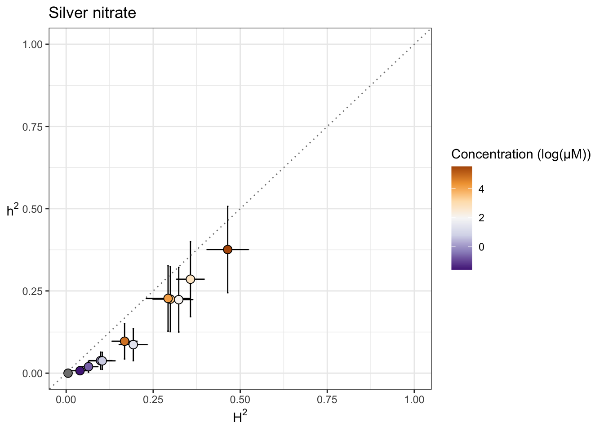
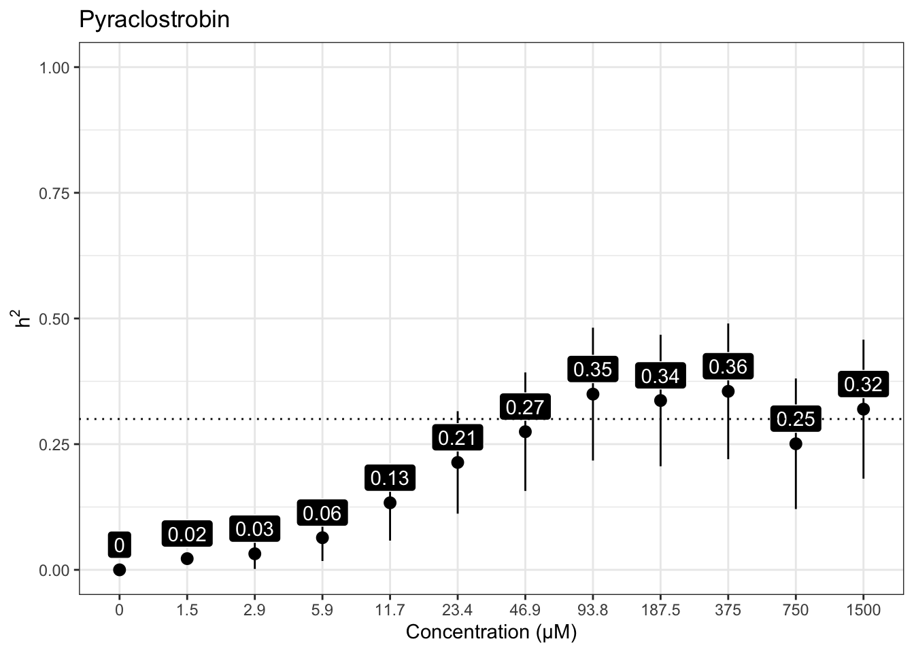
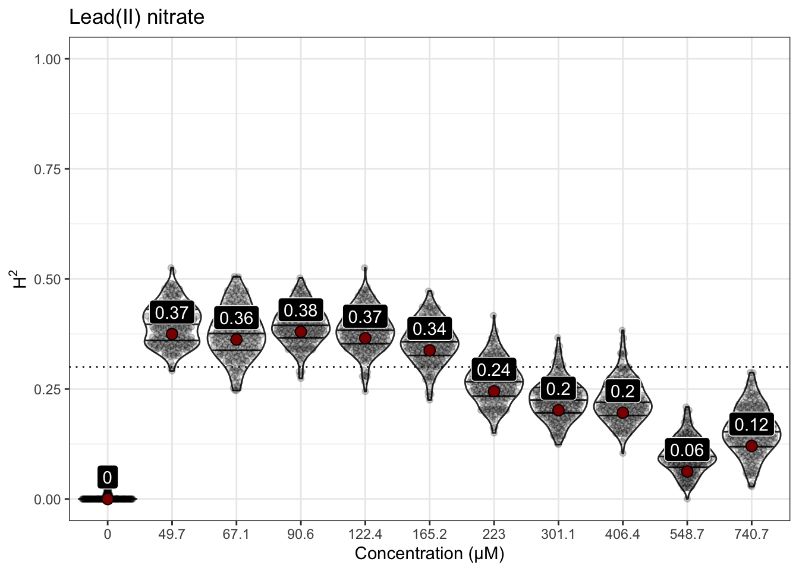
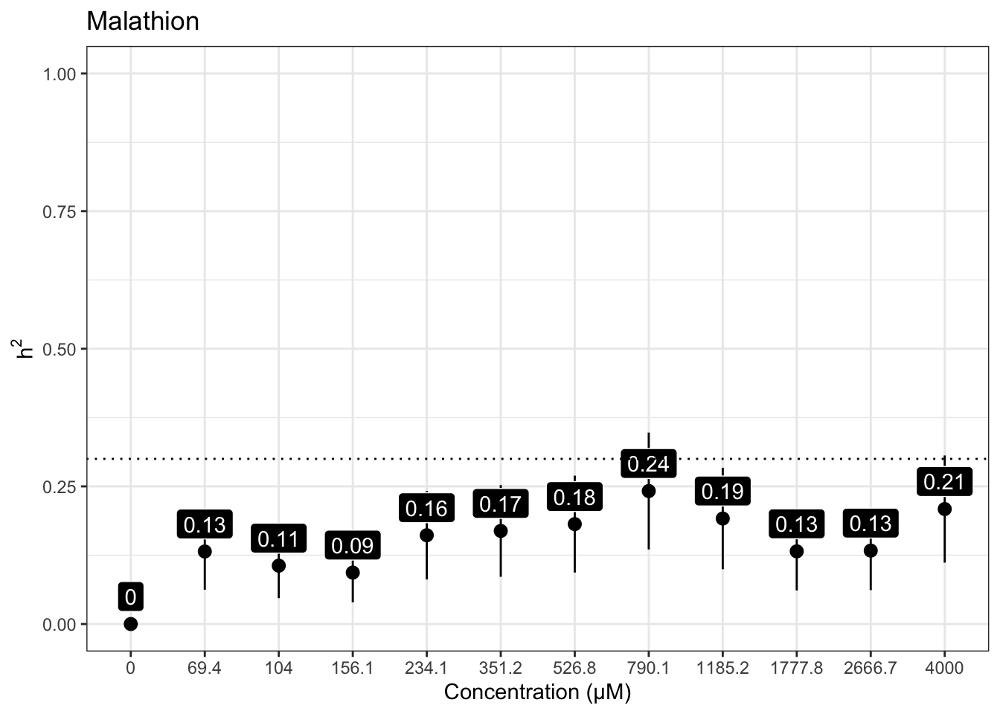
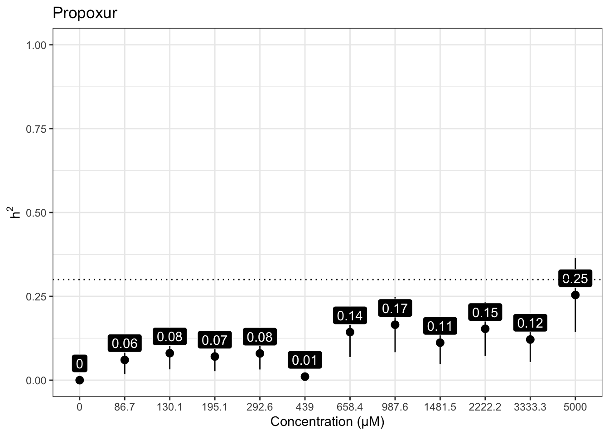

Heritability Analyses
Last updated: 2021-03-29
Checks: 6 1
Knit directory: toxin_dose_responses/
This reproducible R Markdown analysis was created with workflowr (version 1.6.2). The Checks tab describes the reproducibility checks that were applied when the results were created. The Past versions tab lists the development history.
Great! Since the R Markdown file has been committed to the Git repository, you know the exact version of the code that produced these results.
Great job! The global environment was empty. Objects defined in the global environment can affect the analysis in your R Markdown file in unknown ways. For reproduciblity it’s best to always run the code in an empty environment.
The command set.seed(20210305) was run prior to running the code in the R Markdown file. Setting a seed ensures that any results that rely on randomness, e.g. subsampling or permutations, are reproducible.
Great job! Recording the operating system, R version, and package versions is critical for reproducibility.
Nice! There were no cached chunks for this analysis, so you can be confident that you successfully produced the results during this run.
Using absolute paths to the files within your workflowr project makes it difficult for you and others to run your code on a different machine. Change the absolute path(s) below to the suggested relative path(s) to make your code more reproducible.
| absolute | relative |
|---|---|
| ~/Documents/projects/toxin_dose_responses/ | . |
Great! You are using Git for version control. Tracking code development and connecting the code version to the results is critical for reproducibility.
The results in this page were generated with repository version 3720d88. See the Past versions tab to see a history of the changes made to the R Markdown and HTML files.
Note that you need to be careful to ensure that all relevant files for the analysis have been committed to Git prior to generating the results (you can use wflow_publish or wflow_git_commit). workflowr only checks the R Markdown file, but you know if there are other scripts or data files that it depends on. Below is the status of the Git repository when the results were generated:
Ignored files:
Ignored: .DS_Store
Ignored: .Rhistory
Ignored: analysis/.DS_Store
Ignored: output/.DS_Store
Untracked files:
Untracked: code/toxin.geno.matrix.sh
Untracked: data/drugclasses.csv
Untracked: output/2,4-D_EC10.csv
Untracked: output/2,4-D_EC50.csv
Untracked: output/2,4-D_EC90.csv
Untracked: output/3model.heatmap.png
Untracked: output/4model.heatmap.png
Untracked: output/Aldicarb_EC10.csv
Untracked: output/Aldicarb_EC50.csv
Untracked: output/Aldicarb_EC90.csv
Untracked: output/Arsenic trioxide_EC10.csv
Untracked: output/Atrazine_EC10.csv
Untracked: output/Atrazine_EC50.csv
Untracked: output/Atrazine_MDHD.junk.png
Untracked: output/Cadmium dichloride_EC10.csv
Untracked: output/Cadmium dichloride_EC50.csv
Untracked: output/Cadmium dichloride_EC90.csv
Untracked: output/Cadmium dichloride_MDHD.junk.png
Untracked: output/Carbaryl_EC10.csv
Untracked: output/Carbaryl_EC50.csv
Untracked: output/Carbaryl_EC90.csv
Untracked: output/Carboxin_EC10.csv
Untracked: output/Carboxin_EC50.csv
Untracked: output/Carboxin_EC90.csv
Untracked: output/Chlorfenapyr_EC10.csv
Untracked: output/Chlorfenapyr_EC50.csv
Untracked: output/Chlorfenapyr_EC90.csv
Untracked: output/Chlorothalonil_EC10.csv
Untracked: output/Chlorothalonil_EC50.csv
Untracked: output/Chlorothalonil_EC90.csv
Untracked: output/Chlorpyrifos_EC10.csv
Untracked: output/Chlorpyrifos_EC50.csv
Untracked: output/Chlorpyrifos_EC90.csv
Untracked: output/Copper(II) chloride_EC10.csv
Untracked: output/Copper(II) chloride_EC50.csv
Untracked: output/Copper(II) chloride_EC90.csv
Untracked: output/Deltamethrin_EC10.csv
Untracked: output/Deltamethrin_EC50.csv
Untracked: output/Deltamethrin_EC90.csv
Untracked: output/EC10.strain.comp.png
Untracked: output/EC10.survey.png
Untracked: output/H2.plot.20210306.png
Untracked: output/H2.plot.20210308.png
Untracked: output/H2.plot.20210314.png
Untracked: output/Lead(II) nitrate_EC10.csv
Untracked: output/Malathion_EC10.csv
Untracked: output/Malathion_EC50.csv
Untracked: output/Malathion_EC90.csv
Untracked: output/Manganese dichloride_EC10.csv
Untracked: output/Manganese dichloride_EC50.csv
Untracked: output/Manganese dichloride_EC90.csv
Untracked: output/Methomyl_EC10.csv
Untracked: output/Methomyl_EC50.csv
Untracked: output/Methomyl_EC90.csv
Untracked: output/Methylmercury dichloride_EC10.csv
Untracked: output/Methylmercury dichloride_EC50.csv
Untracked: output/Methylmercury dichloride_EC90.csv
Untracked: output/Nickel dichloride_EC10.csv
Untracked: output/Nickel dichloride_EC50.csv
Untracked: output/Nickel dichloride_EC90.csv
Untracked: output/Paraquat_EC10.csv
Untracked: output/Paraquat_EC50.csv
Untracked: output/Paraquat_EC90.csv
Untracked: output/Propoxur_EC10.csv
Untracked: output/Propoxur_EC50.csv
Untracked: output/Propoxur_EC90.csv
Untracked: output/Pyraclostrobin_EC10.csv
Untracked: output/Pyraclostrobin_EC50.csv
Untracked: output/Pyraclostrobin_EC90.csv
Untracked: output/Pyraclostrobin_MDHD.junk.png
Untracked: output/Silver nitrate_EC10.csv
Untracked: output/Silver nitrate_EC50.csv
Untracked: output/Silver nitrate_EC90.csv
Untracked: output/Triphenyl phosphate_EC10.csv
Untracked: output/Triphenyl phosphate_EC50.csv
Untracked: output/Triphenyl phosphate_EC90.csv
Untracked: output/Triphenyl phosphate_MDHD.junk.png
Untracked: output/Zinc dichloride_EC10.csv
Untracked: output/Zinc dichloride_EC50.csv
Untracked: output/Zinc dichloride_EC90.csv
Untracked: output/cv.control.wells.csv
Untracked: output/manganese_toxin23_p57.png
Untracked: output/toxicants.8strains.csv
Unstaged changes:
Modified: analysis/doseresponsemodels.Rmd
Note that any generated files, e.g. HTML, png, CSS, etc., are not included in this status report because it is ok for generated content to have uncommitted changes.
These are the previous versions of the repository in which changes were made to the R Markdown (analysis/heritability.Rmd) and HTML (docs/heritability.html) files. If you’ve configured a remote Git repository (see ?wflow_git_remote), click on the hyperlinks in the table below to view the files as they were in that past version.
| File | Version | Author | Date | Message |
|---|---|---|---|---|
| Rmd | ecf1af1 | sam-widmayer | 2021-03-29 | integrate toxin24A |
| html | a41a855 | sam-widmayer | 2021-03-25 | Build site. |
| Rmd | a6438e9 | sam-widmayer | 2021-03-25 | fix bootstrap bug |
| html | 0280cf4 | sam-widmayer | 2021-03-24 | Build site. |
| Rmd | 8ba0e4b | sam-widmayer | 2021-03-24 | read in geno matrix |
| Rmd | cdb9d3e | sam-widmayer | 2021-03-24 | narrow sense herits and plotting |
| html | 0e83f2b | sam-widmayer | 2021-03-24 | Build site. |
| Rmd | 75da486 | sam-widmayer | 2021-03-24 | progress meeting updates |
| Rmd | 7d105e2 | sam-widmayer | 2021-03-24 | progress meeting updates |
| html | a451b2a | sam-widmayer | 2021-03-17 | Build site. |
| Rmd | 5d61c5a | sam-widmayer | 2021-03-17 | fix NA bug H2.plot |
| Rmd | 576f962 | sam-widmayer | 2021-03-17 | show H2 bootstrap distributions |
| html | 4bcbcdd | sam-widmayer | 2021-03-14 | Build site. |
| Rmd | bdfa65f | sam-widmayer | 2021-03-14 | integrate toxin22 results |
| html | 212e0ae | sam-widmayer | 2021-03-08 | Build site. |
| html | cb6e132 | sam-widmayer | 2021-03-06 | Build site. |
| Rmd | 46c9647 | sam-widmayer | 2021-03-06 | static working directory |
| Rmd | 41bdaa0 | sam-widmayer | 2021-03-05 | dynamic working directory |
| Rmd | 0c9d312 | sam-widmayer | 2021-03-05 | initiate toxin DRC analysis repo |
Silver nitrate
iteration LogLik wall cpu(sec) restrained
1 -124.234 8:48:8 0 0
2 -121.76 8:48:8 0 0
3 -117.464 8:48:8 0 1
4 -115.5 8:48:8 0 1
5 -115.5 8:48:8 0 1
iteration LogLik wall cpu(sec) restrained
1 -97.5061 8:48:14 0 0
2 -96.1992 8:48:14 0 0
3 -95.109 8:48:14 0 0
4 -94.8719 8:48:14 0 0
5 -94.8711 8:48:14 0 0
iteration LogLik wall cpu(sec) restrained
1 -100.736 8:48:21 0 0
2 -99.5298 8:48:21 0 0
3 -98.4882 8:48:21 0 0
4 -98.145 8:48:21 0 0
5 -98.1206 8:48:21 0 0
6 -98.1186 8:48:21 0 0
7 -98.1185 8:48:21 0 0
iteration LogLik wall cpu(sec) restrained
1 -95.2891 8:48:27 0 0
2 -94.9787 8:48:27 0 0
3 -94.8174 8:48:27 0 0
4 -94.7875 8:48:27 0 0
5 -94.7864 8:48:27 0 0
6 -94.7863 8:48:27 0 0
iteration LogLik wall cpu(sec) restrained
1 -97.2696 8:48:33 0 0
2 -96.8616 8:48:33 0 0
3 -96.6071 8:48:33 0 0
4 -96.537 8:48:33 0 0
5 -96.5307 8:48:33 0 0
6 -96.5301 8:48:33 0 0
iteration LogLik wall cpu(sec) restrained
1 -97.0868 8:48:40 0 0
2 -96.4296 8:48:40 0 0
3 -95.9948 8:48:40 0 0
4 -95.8858 8:48:40 0 0
5 -95.8795 8:48:40 0 0
6 -95.8792 8:48:40 0 0
iteration LogLik wall cpu(sec) restrained
1 -85.1785 8:48:46 0 0
2 -85.1785 8:48:46 0 0
3 -85.1785 8:48:46 0 0
4 -85.1785 8:48:46 0 0
iteration LogLik wall cpu(sec) restrained
1 -106.248 8:48:52 0 0
2 -106.036 8:48:52 0 0
3 -105.934 8:48:52 0 0
4 -105.917 8:48:52 0 0
5 -105.916 8:48:52 0 0
iteration LogLik wall cpu(sec) restrained
1 -103.122 8:48:58 0 0
2 -102.849 8:48:58 0 0
3 -102.715 8:48:58 0 0
4 -102.692 8:48:59 1 0
5 -102.691 8:48:59 1 0
iteration LogLik wall cpu(sec) restrained
1 -104.473 8:49:5 0 0
2 -103.963 8:49:5 0 0
3 -103.651 8:49:5 0 0
4 -103.578 8:49:5 0 0
5 -103.573 8:49:5 0 0
6 -103.573 8:49:5 0 0
iteration LogLik wall cpu(sec) restrained
1 -106.42 8:49:11 0 0
2 -105.429 8:49:11 0 0
3 -104.704 8:49:11 0 0
4 -104.542 8:49:11 0 0
5 -104.538 8:49:11 0 0
6 -104.538 8:49:11 0 0
iteration LogLik wall cpu(sec) restrained
1 -72.2498 8:49:18 0 0
2 -72.2422 8:49:18 0 0
3 -72.2396 8:49:18 0 0
4 -72.2392 8:49:18 0 0

| Version | Author | Date |
|---|---|---|
| 0280cf4 | sam-widmayer | 2021-03-24 |

Cadmium dichloride
iteration LogLik wall cpu(sec) restrained
1 -135.021 8:49:28 0 0
2 -132.551 8:49:28 0 0
3 -128.261 8:49:28 0 1
4 -126 8:49:28 0 1
5 -126 8:49:28 0 1
iteration LogLik wall cpu(sec) restrained
1 -122.625 8:49:34 0 0
2 -121.957 8:49:34 0 0
3 -121.51 8:49:34 0 0
4 -121.396 8:49:34 0 0
5 -121.389 8:49:34 0 0
6 -121.389 8:49:34 0 0
iteration LogLik wall cpu(sec) restrained
1 -129.761 8:49:40 0 0
2 -128.465 8:49:40 0 0
3 -127.356 8:49:41 1 0
4 -127.059 8:49:41 1 0
5 -127.05 8:49:41 1 0
6 -127.05 8:49:41 1 0
iteration LogLik wall cpu(sec) restrained
1 -129.434 8:49:47 0 0
2 -127.636 8:49:47 0 0
3 -125.549 8:49:47 0 0
4 -124.527 8:49:47 0 0
5 -124.456 8:49:47 0 0
6 -124.45 8:49:47 0 0
7 -124.45 8:49:47 0 0
iteration LogLik wall cpu(sec) restrained
1 -132.747 8:49:53 0 0
2 -131.487 8:49:53 0 0
3 -130.289 8:49:54 1 0
4 -129.738 8:49:54 1 0
5 -129.643 8:49:54 1 0
6 -129.623 8:49:54 1 0
7 -129.618 8:49:54 1 0
8 -129.617 8:49:54 1 0
9 -129.617 8:49:54 1 0
iteration LogLik wall cpu(sec) restrained
1 -127.604 8:50:0 0 0
2 -126.618 8:50:0 0 0
3 -125.884 8:50:0 0 0
4 -125.704 8:50:0 0 0
5 -125.697 8:50:0 0 0
6 -125.697 8:50:0 0 0
iteration LogLik wall cpu(sec) restrained
1 -121.278 8:50:7 0 0
2 -120.266 8:50:7 0 0
3 -119.429 8:50:7 0 0
4 -119.132 8:50:7 0 0
5 -119.102 8:50:7 0 0
6 -119.099 8:50:7 0 0
7 -119.098 8:50:7 0 0
iteration LogLik wall cpu(sec) restrained
1 -131.964 8:50:13 0 0
2 -129.678 8:50:13 0 0
3 -126.221 8:50:13 0 1
4 -124.5 8:50:13 0 1
5 -124.5 8:50:13 0 1
iteration LogLik wall cpu(sec) restrained
1 -84.926 8:50:20 0 0
2 -84.4145 8:50:20 0 0
3 -84.1854 8:50:20 0 0
4 -84.1697 8:50:20 0 0
5 -84.1696 8:50:20 0 0
iteration LogLik wall cpu(sec) restrained
1 -61.9138 8:50:26 0 0
2 -61.8709 8:50:26 0 0
3 -61.8551 8:50:26 0 0
4 -61.8532 8:50:26 0 0
5 -61.8532 8:50:26 0 0
iteration LogLik wall cpu(sec) restrained
1 -115.676 8:50:32 0 0
2 -114.675 8:50:32 0 0
3 -113.899 8:50:32 0 0
4 -113.673 8:50:32 0 0
5 -113.657 8:50:32 0 0
6 -113.656 8:50:32 0 0
7 -113.656 8:50:32 0 0
iteration LogLik wall cpu(sec) restrained
1 -115.514 8:50:38 0 0
2 -114.319 8:50:38 0 0
3 -113.405 8:50:39 1 0
4 -113.238 8:50:39 1 0
5 -113.238 8:50:39 1 0

| Version | Author | Date |
|---|---|---|
| 0280cf4 | sam-widmayer | 2021-03-24 |

Copper (II) dichloride
iteration LogLik wall cpu(sec) restrained
1 -145.269 8:50:47 0 0
2 -142.801 8:50:47 0 0
3 -138.516 8:50:47 0 1
4 -136 8:50:47 0 1
5 -136 8:50:47 0 1
iteration LogLik wall cpu(sec) restrained
1 -135.019 8:50:54 0 0
2 -133.776 8:50:54 0 0
3 -132.721 8:50:54 0 0
4 -132.464 8:50:54 0 0
5 -132.462 8:50:54 0 0
6 -132.462 8:50:54 0 0
iteration LogLik wall cpu(sec) restrained
1 -139.542 8:51:0 0 0
2 -137.862 8:51:0 0 0
3 -136.217 8:51:0 0 0
4 -135.935 8:51:0 0 0
5 -135.924 8:51:0 0 0
6 -135.923 8:51:0 0 0
iteration LogLik wall cpu(sec) restrained
1 -145.096 8:51:7 0 0
2 -143.122 8:51:7 0 0
3 -140.717 8:51:7 0 0
4 -139.961 8:51:7 0 0
5 -139.935 8:51:7 0 0
6 -139.932 8:51:7 0 0
7 -139.932 8:51:7 0 0
iteration LogLik wall cpu(sec) restrained
1 -139.522 8:51:14 1 0
2 -138.208 8:51:14 1 0
3 -137.076 8:51:14 1 0
4 -136.799 8:51:14 1 0
5 -136.797 8:51:14 1 0
6 -136.797 8:51:14 1 0
iteration LogLik wall cpu(sec) restrained
1 -143.174 8:51:20 0 0
2 -141.387 8:51:20 0 0
3 -139.454 8:51:20 0 0
4 -138.933 8:51:20 0 0
5 -138.93 8:51:20 0 0
6 -138.93 8:51:20 0 0
iteration LogLik wall cpu(sec) restrained
1 -135.701 8:51:27 0 0
2 -134.109 8:51:27 0 0
3 -132.493 8:51:27 0 0
4 -131.998 8:51:27 0 0
5 -131.997 8:51:27 0 0
iteration LogLik wall cpu(sec) restrained
1 -136.257 8:51:33 0 0
2 -134.597 8:51:33 0 0
3 -132.889 8:51:33 0 0
4 -132.371 8:51:33 0 0
5 -132.37 8:51:33 0 0
6 -132.37 8:51:33 0 0
iteration LogLik wall cpu(sec) restrained
1 -131.294 8:51:40 1 0
2 -129.85 8:51:40 1 0
3 -128.536 8:51:40 1 0
4 -128.188 8:51:40 1 0
5 -128.183 8:51:40 1 0
6 -128.183 8:51:40 1 0
iteration LogLik wall cpu(sec) restrained
1 -117.3 8:51:46 0 0
2 -116.893 8:51:46 0 0
3 -116.679 8:51:46 0 0
4 -116.643 8:51:46 0 0
5 -116.642 8:51:46 0 0
iteration LogLik wall cpu(sec) restrained
1 -127.133 8:51:52 0 0
2 -125.786 8:51:52 0 0
3 -124.553 8:51:52 0 0
4 -124.159 8:51:52 0 0
5 -124.145 8:51:53 1 0
6 -124.144 8:51:53 1 0
iteration LogLik wall cpu(sec) restrained
1 -37.0041 8:51:59 0 0
2 -36.6145 8:51:59 0 0
3 -36.4874 8:51:59 0 0
4 -36.4684 8:51:59 0 0
5 -36.4676 8:51:59 0 0
[1] "Only 1 Strain Sampled in Bootstrap - Skipping"
[1] "Only 1 Strain Sampled in Bootstrap - Skipping"
[1] "Only 1 Strain Sampled in Bootstrap - Skipping"

| Version | Author | Date |
|---|---|---|
| 0280cf4 | sam-widmayer | 2021-03-24 |

Nickel dichloride
iteration LogLik wall cpu(sec) restrained
1 -141.426 8:52:7 0 0
2 -139.144 8:52:7 0 0
3 -135.533 8:52:7 0 1
4 -133 8:52:8 1 1
5 -133 8:52:8 1 1
iteration LogLik wall cpu(sec) restrained
1 -142.859 8:52:14 0 0
2 -140.683 8:52:14 0 0
3 -137.634 8:52:14 0 1
4 -136.5 8:52:14 0 0
5 -136.403 8:52:14 0 0
6 -136.376 8:52:14 0 0
7 -136.36 8:52:14 0 0
8 -136.355 8:52:14 0 0
9 -136.352 8:52:14 0 0
10 -136.351 8:52:14 0 0
11 -136.35 8:52:14 0 0
iteration LogLik wall cpu(sec) restrained
1 -139.71 8:52:21 0 0
2 -138.154 8:52:21 0 0
3 -136.504 8:52:21 0 0
4 -135.675 8:52:21 0 0
5 -135.531 8:52:21 0 0
6 -135.494 8:52:21 0 0
7 -135.482 8:52:21 0 0
8 -135.477 8:52:21 0 0
9 -135.475 8:52:21 0 0
10 -135.474 8:52:21 0 0
iteration LogLik wall cpu(sec) restrained
1 -137.444 8:52:28 1 0
2 -136.235 8:52:28 1 0
3 -135.051 8:52:28 1 0
4 -134.377 8:52:28 1 0
5 -134.165 8:52:28 1 0
6 -134.079 8:52:28 1 0
7 -134.039 8:52:28 1 0
8 -134.018 8:52:28 1 0
9 -134.006 8:52:28 1 0
10 -134 8:52:28 1 0
11 -133.996 8:52:28 1 0
12 -133.993 8:52:28 1 0
13 -133.992 8:52:28 1 0
14 -133.991 8:52:28 1 0
iteration LogLik wall cpu(sec) restrained
1 -131.731 8:52:34 0 0
2 -130.827 8:52:34 0 0
3 -130.129 8:52:35 1 0
4 -129.911 8:52:35 1 0
5 -129.894 8:52:35 1 0
6 -129.893 8:52:35 1 0
7 -129.893 8:52:35 1 0
iteration LogLik wall cpu(sec) restrained
1 -132.147 8:52:41 0 0
2 -130.945 8:52:41 0 0
3 -129.882 8:52:41 0 0
4 -129.504 8:52:41 0 0
5 -129.474 8:52:41 0 0
6 -129.471 8:52:41 0 0
7 -129.471 8:52:41 0 0
iteration LogLik wall cpu(sec) restrained
1 -127.132 8:52:48 0 0
2 -125.276 8:52:48 0 0
3 -123.122 8:52:48 0 0
4 -122.263 8:52:48 0 0
5 -122.255 8:52:48 0 0
6 -122.255 8:52:48 0 0
iteration LogLik wall cpu(sec) restrained
1 -128.97 8:52:54 0 0
2 -127.988 8:52:54 0 0
3 -127.162 8:52:54 0 0
4 -126.84 8:52:54 0 0
5 -126.798 8:52:54 0 0
6 -126.793 8:52:54 0 0
7 -126.792 8:52:54 0 0
iteration LogLik wall cpu(sec) restrained
1 -127.219 8:53:1 0 0
2 -125.848 8:53:1 0 0
3 -124.628 8:53:1 0 0
4 -124.296 8:53:1 0 0
5 -124.288 8:53:1 0 0
6 -124.288 8:53:1 0 0
iteration LogLik wall cpu(sec) restrained
1 -87.1568 8:53:7 0 0
2 -87.0567 8:53:7 0 0
3 -87.0326 8:53:7 0 0
4 -87.0306 8:53:7 0 0
5 -87.0306 8:53:7 0 0
iteration LogLik wall cpu(sec) restrained
1 -12.9591 8:53:14 0 0
2 -9.79517 8:53:14 0 0
3 -9.50905 8:53:14 0 0
4 -9.49415 8:53:14 0 0
5 -9.49409 8:53:14 0 0
iteration LogLik wall cpu(sec) restrained
1 -137.572 8:53:20 0 0
2 -135.102 8:53:20 0 0
3 -130.814 8:53:20 0 1
4 -128.5 8:53:20 0 1
5 -128.5 8:53:20 0 1

| Version | Author | Date |
|---|---|---|
| 0280cf4 | sam-widmayer | 2021-03-24 |

Paraquat
iteration LogLik wall cpu(sec) restrained
1 -100.023 8:53:28 0 0
2 -97.5379 8:53:29 1 0
3 -93.2191 8:53:29 1 1
4 -92 8:53:29 1 1
5 -92 8:53:29 1 1
iteration LogLik wall cpu(sec) restrained
1 -77.2458 8:53:35 0 0
2 -76.9731 8:53:35 0 0
3 -76.8664 8:53:35 0 0
4 -76.8579 8:53:35 0 0
5 -76.8579 8:53:35 0 0
iteration LogLik wall cpu(sec) restrained
1 -88.9169 8:53:41 0 0
2 -88.2786 8:53:41 0 0
3 -87.9496 8:53:41 0 0
4 -87.917 8:53:41 0 0
5 -87.917 8:53:41 0 0
iteration LogLik wall cpu(sec) restrained
1 -88.1173 8:53:47 0 0
2 -87.6924 8:53:47 0 0
3 -87.4323 8:53:47 0 0
4 -87.367 8:53:47 0 0
5 -87.3626 8:53:47 0 0
6 -87.3623 8:53:47 0 0
iteration LogLik wall cpu(sec) restrained
1 -82.2637 8:53:53 0 0
2 -81.8538 8:53:53 0 0
3 -81.6686 8:53:53 0 0
4 -81.6507 8:53:54 1 0
5 -81.6507 8:53:54 1 0
iteration LogLik wall cpu(sec) restrained
1 -33.0182 8:54:0 0 0
2 -30.8305 8:54:0 0 0
3 -30.5748 8:54:0 0 0
4 -30.5599 8:54:0 0 0
5 -30.5598 8:54:0 0 0
iteration LogLik wall cpu(sec) restrained
1 -30.3452 8:54:6 0 0
2 -26.5789 8:54:6 0 0
3 -26.1645 8:54:6 0 0
4 -26.1391 8:54:6 0 0
5 -26.1389 8:54:6 0 0
iteration LogLik wall cpu(sec) restrained
1 -39.7953 8:54:12 0 0
2 -38.0744 8:54:12 0 0
3 -37.8442 8:54:12 0 0
4 -37.8296 8:54:12 0 0
5 -37.8295 8:54:12 0 0
iteration LogLik wall cpu(sec) restrained
1 -49.7775 8:54:18 0 0
2 -48.8335 8:54:18 0 0
3 -48.6604 8:54:18 0 0
4 -48.6464 8:54:19 1 0
5 -48.6462 8:54:19 1 0
iteration LogLik wall cpu(sec) restrained
1 -22.0295 8:54:25 0 0
2 -17.8667 8:54:25 0 0
3 -17.3784 8:54:25 0 0
4 -17.3491 8:54:25 0 0
5 -17.3489 8:54:25 0 0
[1] "Only 1 Strain Sampled in Bootstrap - Skipping"
[1] "Only 1 Strain Sampled in Bootstrap - Skipping"
iteration LogLik wall cpu(sec) restrained
1 -13.2774 8:54:31 0 0
2 -11.9808 8:54:31 0 0
3 -11.4098 8:54:31 0 0
4 -11.3144 8:54:31 0 0
5 -11.3105 8:54:31 0 0
6 -11.3103 8:54:31 0 0
[1] "Only 1 Strain Sampled in Bootstrap - Skipping"
[1] "Only 1 Strain Sampled in Bootstrap - Skipping"
[1] "Only 1 Strain Sampled in Bootstrap - Skipping"
[1] "Only 1 Strain Sampled in Bootstrap - Skipping"
[1] "Only 1 Strain Sampled in Bootstrap - Skipping"
[1] "Only 1 Strain Sampled in Bootstrap - Skipping"
[1] "Only 1 Strain Sampled in Bootstrap - Skipping"
[1] "Only 1 Strain Sampled in Bootstrap - Skipping"
[1] "Only 1 Strain Sampled in Bootstrap - Skipping"
[1] "Only 1 Strain Sampled in Bootstrap - Skipping"
[1] "Only 1 Strain Sampled in Bootstrap - Skipping"
[1] "Only 1 Strain Sampled in Bootstrap - Skipping"
[1] "Only 1 Strain Sampled in Bootstrap - Skipping"
[1] "Only 1 Strain Sampled in Bootstrap - Skipping"
[1] "Only 1 Strain Sampled in Bootstrap - Skipping"
[1] "Only 1 Strain Sampled in Bootstrap - Skipping"
[1] "Only 1 Strain Sampled in Bootstrap - Skipping"
[1] "Only 1 Strain Sampled in Bootstrap - Skipping"
[1] "Only 1 Strain Sampled in Bootstrap - Skipping"
[1] "Only 1 Strain Sampled in Bootstrap - Skipping"
[1] "Only 1 Strain Sampled in Bootstrap - Skipping"
[1] "Only 1 Strain Sampled in Bootstrap - Skipping"
[1] "Only 1 Strain Sampled in Bootstrap - Skipping"
[1] "Only 1 Strain Sampled in Bootstrap - Skipping"
[1] "Only 1 Strain Sampled in Bootstrap - Skipping"
[1] "Only 1 Strain Sampled in Bootstrap - Skipping"
[1] "Only 1 Strain Sampled in Bootstrap - Skipping"
[1] "Only 1 Strain Sampled in Bootstrap - Skipping"
[1] "Only 1 Strain Sampled in Bootstrap - Skipping"
[1] "Only 1 Strain Sampled in Bootstrap - Skipping"
[1] "Only 1 Strain Sampled in Bootstrap - Skipping"
[1] "Only 1 Strain Sampled in Bootstrap - Skipping"
[1] "Only 1 Strain Sampled in Bootstrap - Skipping"
[1] "Only 1 Strain Sampled in Bootstrap - Skipping"
[1] "Only 1 Strain Sampled in Bootstrap - Skipping"
[1] "Only 1 Strain Sampled in Bootstrap - Skipping"
[1] "Only 1 Strain Sampled in Bootstrap - Skipping"
[1] "Only 1 Strain Sampled in Bootstrap - Skipping"
[1] "Only 1 Strain Sampled in Bootstrap - Skipping"
[1] "Only 1 Strain Sampled in Bootstrap - Skipping"
[1] "Only 1 Strain Sampled in Bootstrap - Skipping"
[1] "Only 1 Strain Sampled in Bootstrap - Skipping"
[1] "Only 1 Strain Sampled in Bootstrap - Skipping"
[1] "Only 1 Strain Sampled in Bootstrap - Skipping"
[1] "Only 1 Strain Sampled in Bootstrap - Skipping"
[1] "Only 1 Strain Sampled in Bootstrap - Skipping"
[1] "Only 1 Strain Sampled in Bootstrap - Skipping"
[1] "Only 1 Strain Sampled in Bootstrap - Skipping"
[1] "Only 1 Strain Sampled in Bootstrap - Skipping"
[1] "Only 1 Strain Sampled in Bootstrap - Skipping"
[1] "Only 1 Strain Sampled in Bootstrap - Skipping"
[1] "Only 1 Strain Sampled in Bootstrap - Skipping"
[1] "Only 1 Strain Sampled in Bootstrap - Skipping"
[1] "Only 1 Strain Sampled in Bootstrap - Skipping"
[1] "Only 1 Strain Sampled in Bootstrap - Skipping"
[1] "Only 1 Strain Sampled in Bootstrap - Skipping"
[1] "Only 1 Strain Sampled in Bootstrap - Skipping"
[1] "Only 1 Strain Sampled in Bootstrap - Skipping"
[1] "Only 1 Strain Sampled in Bootstrap - Skipping"
[1] "Only 1 Strain Sampled in Bootstrap - Skipping"
[1] "Only 1 Strain Sampled in Bootstrap - Skipping"
[1] "Only 1 Strain Sampled in Bootstrap - Skipping"
[1] "Only 1 Strain Sampled in Bootstrap - Skipping"
[1] "Only 1 Strain Sampled in Bootstrap - Skipping"
[1] "Only 1 Strain Sampled in Bootstrap - Skipping"
[1] "Only 1 Strain Sampled in Bootstrap - Skipping"
[1] "Only 1 Strain Sampled in Bootstrap - Skipping"
[1] "Only 1 Strain Sampled in Bootstrap - Skipping"
[1] "Only 1 Strain Sampled in Bootstrap - Skipping"
[1] "Only 1 Strain Sampled in Bootstrap - Skipping"
[1] "Only 1 Strain Sampled in Bootstrap - Skipping"
[1] "Only 1 Strain Sampled in Bootstrap - Skipping"
[1] "Only 1 Strain Sampled in Bootstrap - Skipping"
[1] "Only 1 Strain Sampled in Bootstrap - Skipping"
[1] "Only 1 Strain Sampled in Bootstrap - Skipping"
[1] "Only 1 Strain Sampled in Bootstrap - Skipping"
[1] "Only 1 Strain Sampled in Bootstrap - Skipping"
[1] "Only 1 Strain Sampled in Bootstrap - Skipping"
[1] "Only 1 Strain Sampled in Bootstrap - Skipping"
[1] "Only 1 Strain Sampled in Bootstrap - Skipping"
[1] "Only 1 Strain Sampled in Bootstrap - Skipping"
[1] "Only 1 Strain Sampled in Bootstrap - Skipping"
[1] "Only 1 Strain Sampled in Bootstrap - Skipping"
[1] "Only 1 Strain Sampled in Bootstrap - Skipping"
[1] "Only 1 Strain Sampled in Bootstrap - Skipping"
[1] "Only 1 Strain Sampled in Bootstrap - Skipping"
[1] "Only 1 Strain Sampled in Bootstrap - Skipping"
[1] "Only 1 Strain Sampled in Bootstrap - Skipping"
[1] "Only 1 Strain Sampled in Bootstrap - Skipping"
[1] "Only 1 Strain Sampled in Bootstrap - Skipping"
[1] "Only 1 Strain Sampled in Bootstrap - Skipping"
[1] "Only 1 Strain Sampled in Bootstrap - Skipping"
iteration LogLik wall cpu(sec) restrained
1 -10.3527 8:54:35 0 0
2 -2.30451 8:54:35 0 0
3 -1.66587 8:54:35 0 0
4 -1.63054 8:54:35 0 0
5 -1.63025 8:54:35 0 0

| Version | Author | Date |
|---|---|---|
| 0280cf4 | sam-widmayer | 2021-03-24 |

Zinc dichloride
iteration LogLik wall cpu(sec) restrained
1 -130.924 8:54:44 0 0
2 -128.451 8:54:44 0 0
3 -124.159 8:54:44 0 1
4 -122 8:54:44 0 1
5 -122 8:54:44 0 1
iteration LogLik wall cpu(sec) restrained
1 -127.608 8:54:50 0 0
2 -125.693 8:54:50 0 0
3 -123.278 8:54:50 0 0
4 -121.65 8:54:50 0 1
5 -121.5 8:54:50 0 1
6 -121.5 8:54:50 0 1
iteration LogLik wall cpu(sec) restrained
1 -127.996 8:54:57 0 0
2 -126.433 8:54:57 0 0
3 -124.659 8:54:57 0 0
4 -123.47 8:54:57 0 0
5 -123.12 8:54:57 0 1
6 -123 8:54:57 0 1
7 -123 8:54:57 0 1
iteration LogLik wall cpu(sec) restrained
1 -129.947 8:55:3 0 0
2 -128.204 8:55:3 0 0
3 -126.207 8:55:3 0 0
4 -125.174 8:55:3 0 0
5 -125.047 8:55:3 0 0
6 -125.018 8:55:3 0 0
7 -125.008 8:55:3 0 0
8 -125.004 8:55:3 0 0
9 -125.002 8:55:3 0 0
10 -125.001 8:55:3 0 0
11 -125 8:55:3 0 0
iteration LogLik wall cpu(sec) restrained
1 -129.073 8:55:10 0 0
2 -127.109 8:55:10 0 0
3 -124.542 8:55:10 0 0
4 -123.002 8:55:10 0 0
5 -123 8:55:10 0 0
6 -123 8:55:10 0 0
iteration LogLik wall cpu(sec) restrained
1 -120.451 8:55:16 0 0
2 -119.342 8:55:16 0 0
3 -118.425 8:55:16 0 0
4 -118.149 8:55:16 0 0
5 -118.135 8:55:16 0 0
6 -118.134 8:55:16 0 0
iteration LogLik wall cpu(sec) restrained
1 -126.019 8:55:23 0 0
2 -124.661 8:55:23 0 0
3 -123.264 8:55:23 0 0
4 -122.501 8:55:23 0 0
5 -122.35 8:55:23 0 0
6 -122.322 8:55:23 0 0
7 -122.316 8:55:23 0 0
8 -122.315 8:55:23 0 0
9 -122.315 8:55:23 0 0
iteration LogLik wall cpu(sec) restrained
1 -121.425 8:55:29 0 0
2 -120.182 8:55:29 0 0
3 -119.149 8:55:29 0 0
4 -118.895 8:55:29 0 0
5 -118.891 8:55:29 0 0
6 -118.891 8:55:29 0 0
iteration LogLik wall cpu(sec) restrained
1 -107.162 8:55:36 0 0
2 -106.85 8:55:36 0 0
3 -106.713 8:55:36 0 0
4 -106.697 8:55:36 0 0
5 -106.697 8:55:36 0 0
iteration LogLik wall cpu(sec) restrained
1 -116.238 8:55:42 0 0
2 -115.293 8:55:42 0 0
3 -114.674 8:55:42 0 0
4 -114.584 8:55:42 0 0
5 -114.584 8:55:42 0 0
iteration LogLik wall cpu(sec) restrained
1 -96.2019 8:55:48 0 0
2 -96.055 8:55:48 0 0
3 -95.9994 8:55:48 0 0
4 -95.9939 8:55:48 0 0
5 -95.9939 8:55:48 0 0
iteration LogLik wall cpu(sec) restrained
1 -102.002 8:55:55 0 0
2 -101.771 8:55:55 0 0
3 -101.655 8:55:55 0 0
4 -101.634 8:55:55 0 0
5 -101.633 8:55:55 0 0

| Version | Author | Date |
|---|---|---|
| 0280cf4 | sam-widmayer | 2021-03-24 |

Pyraclostrobin
[1] "Excluding toxin11A: Inconsistent Response"iteration LogLik wall cpu(sec) restrained
1 -103.617 8:56:4 0 0
2 -101.134 8:56:4 0 0
3 -96.8137 8:56:4 0 1
4 -95.5 8:56:4 0 1
5 -95.5 8:56:4 0 1
iteration LogLik wall cpu(sec) restrained
1 -90.901 8:56:10 0 0
2 -90.6719 8:56:10 0 0
3 -90.5401 8:56:10 0 0
4 -90.5043 8:56:10 0 0
5 -90.5007 8:56:10 0 0
6 -90.5004 8:56:10 0 0
iteration LogLik wall cpu(sec) restrained
1 -84.1629 8:56:16 0 0
2 -83.8615 8:56:16 0 0
3 -83.7065 8:56:16 0 0
4 -83.6786 8:56:16 0 0
5 -83.6777 8:56:16 0 0
iteration LogLik wall cpu(sec) restrained
1 -85.477 8:56:22 0 0
2 -85.3729 8:56:22 0 0
3 -85.3274 8:56:22 0 0
4 -85.3202 8:56:22 0 0
5 -85.3199 8:56:23 1 0
iteration LogLik wall cpu(sec) restrained
1 -41.9962 8:56:29 0 0
2 -41.1325 8:56:29 0 0
3 -40.9986 8:56:29 0 0
4 -40.99 8:56:29 0 0
5 -40.99 8:56:29 0 0
iteration LogLik wall cpu(sec) restrained
1 -41.469 8:56:35 0 0
2 -40.2223 8:56:35 0 0
3 -40.0353 8:56:35 0 0
4 -40.0227 8:56:35 0 0
5 -40.0226 8:56:35 0 0
iteration LogLik wall cpu(sec) restrained
1 -44.5897 8:56:41 0 0
2 -43.6567 8:56:41 0 0
3 -43.5015 8:56:41 0 0
4 -43.4905 8:56:41 0 0
5 -43.4904 8:56:41 0 0
iteration LogLik wall cpu(sec) restrained
1 -36.8071 8:56:48 0 0
2 -34.4574 8:56:48 0 0
3 -34.1168 8:56:48 0 0
4 -34.0925 8:56:48 0 0
5 -34.0922 8:56:48 0 0
iteration LogLik wall cpu(sec) restrained
1 -42.8699 8:56:54 0 0
2 -42.4384 8:56:54 0 0
3 -42.2746 8:56:54 0 0
4 -42.2429 8:56:54 0 0
5 -42.2407 8:56:54 0 0
6 -42.2406 8:56:54 0 0
[1] "Only 1 Strain Sampled in Bootstrap - Skipping"
[1] "Only 1 Strain Sampled in Bootstrap - Skipping"
[1] "Only 1 Strain Sampled in Bootstrap - Skipping"
[1] "Only 1 Strain Sampled in Bootstrap - Skipping"
[1] "Only 1 Strain Sampled in Bootstrap - Skipping"
[1] "Only 1 Strain Sampled in Bootstrap - Skipping"
[1] "Only 1 Strain Sampled in Bootstrap - Skipping"
[1] "Only 1 Strain Sampled in Bootstrap - Skipping"
[1] "Only 1 Strain Sampled in Bootstrap - Skipping"
[1] "Only 1 Strain Sampled in Bootstrap - Skipping"
[1] "Only 1 Strain Sampled in Bootstrap - Skipping"
[1] "Only 1 Strain Sampled in Bootstrap - Skipping"
[1] "Only 1 Strain Sampled in Bootstrap - Skipping"
[1] "Only 1 Strain Sampled in Bootstrap - Skipping"
[1] "Only 1 Strain Sampled in Bootstrap - Skipping"
[1] "Only 1 Strain Sampled in Bootstrap - Skipping"
[1] "Only 1 Strain Sampled in Bootstrap - Skipping"
[1] "Only 1 Strain Sampled in Bootstrap - Skipping"
[1] "Only 1 Strain Sampled in Bootstrap - Skipping"
[1] "Only 1 Strain Sampled in Bootstrap - Skipping"
[1] "Only 1 Strain Sampled in Bootstrap - Skipping"
[1] "Only 1 Strain Sampled in Bootstrap - Skipping"
[1] "Only 1 Strain Sampled in Bootstrap - Skipping"
[1] "Only 1 Strain Sampled in Bootstrap - Skipping"
[1] "Only 1 Strain Sampled in Bootstrap - Skipping"
[1] "Only 1 Strain Sampled in Bootstrap - Skipping"
[1] "Only 1 Strain Sampled in Bootstrap - Skipping"
[1] "Only 1 Strain Sampled in Bootstrap - Skipping"
[1] "Only 1 Strain Sampled in Bootstrap - Skipping"
[1] "Only 1 Strain Sampled in Bootstrap - Skipping"
[1] "Only 1 Strain Sampled in Bootstrap - Skipping"
[1] "Only 1 Strain Sampled in Bootstrap - Skipping"
[1] "Only 1 Strain Sampled in Bootstrap - Skipping"
[1] "Only 1 Strain Sampled in Bootstrap - Skipping"
[1] "Only 1 Strain Sampled in Bootstrap - Skipping"
[1] "Only 1 Strain Sampled in Bootstrap - Skipping"
[1] "Only 1 Strain Sampled in Bootstrap - Skipping"
[1] "Only 1 Strain Sampled in Bootstrap - Skipping"
[1] "Only 1 Strain Sampled in Bootstrap - Skipping"
[1] "Only 1 Strain Sampled in Bootstrap - Skipping"
[1] "Only 1 Strain Sampled in Bootstrap - Skipping"
[1] "Only 1 Strain Sampled in Bootstrap - Skipping"
[1] "Only 1 Strain Sampled in Bootstrap - Skipping"
[1] "Only 1 Strain Sampled in Bootstrap - Skipping"
[1] "Only 1 Strain Sampled in Bootstrap - Skipping"
[1] "Only 1 Strain Sampled in Bootstrap - Skipping"
[1] "Only 1 Strain Sampled in Bootstrap - Skipping"
[1] "Only 1 Strain Sampled in Bootstrap - Skipping"
[1] "Only 1 Strain Sampled in Bootstrap - Skipping"
[1] "Only 1 Strain Sampled in Bootstrap - Skipping"
[1] "Only 1 Strain Sampled in Bootstrap - Skipping"
[1] "Only 1 Strain Sampled in Bootstrap - Skipping"
[1] "Only 1 Strain Sampled in Bootstrap - Skipping"
[1] "Only 1 Strain Sampled in Bootstrap - Skipping"
iteration LogLik wall cpu(sec) restrained
1 -69.1225 8:56:59 0 0
2 -69.0542 8:56:59 0 0
3 -69.0355 8:56:59 0 0
4 -69.0336 8:56:59 0 0
5 -69.0336 8:56:59 0 0
iteration LogLik wall cpu(sec) restrained
1 -93.1915 8:57:5 0 0
2 -93.0247 8:57:5 0 0
3 -92.91 8:57:5 0 0
4 -92.861 8:57:5 0 0
5 -92.8493 8:57:5 0 0
6 -92.8462 8:57:5 0 0
7 -92.8454 8:57:5 0 0
iteration LogLik wall cpu(sec) restrained
1 -38.5252 8:57:11 0 0
2 -37.8608 8:57:11 0 0
3 -37.6804 8:57:11 0 0
4 -37.6585 8:57:11 0 0
5 -37.6578 8:57:11 0 0
[1] "Only 1 Strain Sampled in Bootstrap - Skipping"
[1] "Only 1 Strain Sampled in Bootstrap - Skipping"
[1] "Only 1 Strain Sampled in Bootstrap - Skipping"
[1] "Only 1 Strain Sampled in Bootstrap - Skipping"
[1] "Only 1 Strain Sampled in Bootstrap - Skipping"
[1] "Only 1 Strain Sampled in Bootstrap - Skipping"
[1] "Only 1 Strain Sampled in Bootstrap - Skipping"
[1] "Only 1 Strain Sampled in Bootstrap - Skipping"
[1] "Only 1 Strain Sampled in Bootstrap - Skipping"
[1] "Only 1 Strain Sampled in Bootstrap - Skipping"
[1] "Only 1 Strain Sampled in Bootstrap - Skipping"
[1] "Only 1 Strain Sampled in Bootstrap - Skipping"
[1] "Only 1 Strain Sampled in Bootstrap - Skipping"
[1] "Only 1 Strain Sampled in Bootstrap - Skipping"
[1] "Only 1 Strain Sampled in Bootstrap - Skipping"
[1] "Only 1 Strain Sampled in Bootstrap - Skipping"
[1] "Only 1 Strain Sampled in Bootstrap - Skipping"
[1] "Only 1 Strain Sampled in Bootstrap - Skipping"
[1] "Only 1 Strain Sampled in Bootstrap - Skipping"
[1] "Only 1 Strain Sampled in Bootstrap - Skipping"
[1] "Only 1 Strain Sampled in Bootstrap - Skipping"
[1] "Only 1 Strain Sampled in Bootstrap - Skipping"
[1] "Only 1 Strain Sampled in Bootstrap - Skipping"
[1] "Only 1 Strain Sampled in Bootstrap - Skipping"
[1] "Only 1 Strain Sampled in Bootstrap - Skipping"
[1] "Only 1 Strain Sampled in Bootstrap - Skipping"
[1] "Only 1 Strain Sampled in Bootstrap - Skipping"
[1] "Only 1 Strain Sampled in Bootstrap - Skipping"
[1] "Only 1 Strain Sampled in Bootstrap - Skipping"
[1] "Only 1 Strain Sampled in Bootstrap - Skipping"
[1] "Only 1 Strain Sampled in Bootstrap - Skipping"
[1] "Only 1 Strain Sampled in Bootstrap - Skipping"

| Version | Author | Date |
|---|---|---|
| 0280cf4 | sam-widmayer | 2021-03-24 |

Aldicarb
iteration LogLik wall cpu(sec) restrained
1 -136.569 8:57:19 0 0
2 -134.099 8:57:19 0 0
3 -129.808 8:57:19 0 1
4 -127.5 8:57:19 0 1
5 -127.5 8:57:20 1 1
iteration LogLik wall cpu(sec) restrained
1 -130.614 8:57:26 0 0
2 -128.979 8:57:26 0 0
3 -127.197 8:57:26 0 0
4 -126.276 8:57:26 0 0
5 -126.099 8:57:26 0 0
6 -126.042 8:57:26 0 0
7 -126.019 8:57:26 0 0
8 -126.009 8:57:26 0 0
9 -126.004 8:57:26 0 0
10 -126.002 8:57:26 0 0
11 -126 8:57:26 0 1
12 -126 8:57:26 0 1
iteration LogLik wall cpu(sec) restrained
1 -133.535 8:57:33 1 0
2 -131.821 8:57:33 1 0
3 -129.819 8:57:33 1 0
4 -128.609 8:57:33 1 0
5 -128.453 8:57:33 1 0
6 -128.448 8:57:33 1 0
7 -128.448 8:57:33 1 0
iteration LogLik wall cpu(sec) restrained
1 -129.849 8:57:39 0 0
2 -128.396 8:57:39 0 0
3 -126.943 8:57:39 0 0
4 -126.305 8:57:39 0 0
5 -126.224 8:57:39 0 0
6 -126.21 8:57:39 0 0
7 -126.207 8:57:39 0 0
8 -126.207 8:57:39 0 0
iteration LogLik wall cpu(sec) restrained
1 -132.925 8:57:46 0 0
2 -131.405 8:57:46 0 0
3 -129.808 8:57:46 0 0
4 -129.003 8:57:46 0 0
5 -128.871 8:57:46 0 0
6 -128.845 8:57:46 0 0
7 -128.84 8:57:46 0 0
8 -128.839 8:57:46 0 0
9 -128.839 8:57:46 0 0
iteration LogLik wall cpu(sec) restrained
1 -128.182 8:57:52 0 0
2 -126.943 8:57:53 1 0
3 -125.887 8:57:53 1 0
4 -125.597 8:57:53 1 0
5 -125.589 8:57:53 1 0
6 -125.589 8:57:53 1 0
iteration LogLik wall cpu(sec) restrained
1 -93.3512 8:57:59 0 0
2 -93.3396 8:57:59 0 0
3 -93.3358 8:57:59 0 0
4 -93.3354 8:57:59 0 0
iteration LogLik wall cpu(sec) restrained
1 -93.9268 8:58:5 0 0
2 -93.8806 8:58:5 0 0
3 -93.864 8:58:5 0 0
4 -93.8621 8:58:5 0 0
5 -93.8621 8:58:5 0 0
iteration LogLik wall cpu(sec) restrained
1 -76.3323 8:58:12 1 0
2 -76.0984 8:58:12 1 0
3 -75.9874 8:58:12 1 0
4 -75.9694 8:58:12 1 0
5 -75.9689 8:58:12 1 0
iteration LogLik wall cpu(sec) restrained
1 -42.5879 8:58:18 0 0
2 -42.5876 8:58:18 0 0
3 -42.5875 8:58:18 0 0
4 -42.5875 8:58:18 0 0
[1] "Only 1 Strain Sampled in Bootstrap - Skipping"
[1] "Only 1 Strain Sampled in Bootstrap - Skipping"
[1] "Only 1 Strain Sampled in Bootstrap - Skipping"
[1] "Only 1 Strain Sampled in Bootstrap - Skipping"
[1] "Only 1 Strain Sampled in Bootstrap - Skipping"
[1] "Only 1 Strain Sampled in Bootstrap - Skipping"
[1] "Only 1 Strain Sampled in Bootstrap - Skipping"
[1] "Only 1 Strain Sampled in Bootstrap - Skipping"
[1] "Only 1 Strain Sampled in Bootstrap - Skipping"
[1] "Only 1 Strain Sampled in Bootstrap - Skipping"
[1] "Only 1 Strain Sampled in Bootstrap - Skipping"
[1] "Only 1 Strain Sampled in Bootstrap - Skipping"
[1] "Only 1 Strain Sampled in Bootstrap - Skipping"
[1] "Only 1 Strain Sampled in Bootstrap - Skipping"
[1] "Only 1 Strain Sampled in Bootstrap - Skipping"
[1] "Only 1 Strain Sampled in Bootstrap - Skipping"
[1] "Only 1 Strain Sampled in Bootstrap - Skipping"

| Version | Author | Date |
|---|---|---|
| 0280cf4 | sam-widmayer | 2021-03-24 |

Chlorfenapyr
[1] "Excluding toxin09A, toxin10A, toxin11A, toxin12A: No Response/Variable Dilution"iteration LogLik wall cpu(sec) restrained
1 -379.024 8:58:27 1 0
2 -376.581 8:58:28 2 0
3 -372.343 8:58:29 3 1
4 -366.5 8:58:30 4 1
5 -366.5 8:58:31 5 1
iteration LogLik wall cpu(sec) restrained
1 -89.0217 8:58:37 0 0
2 -87.964 8:58:37 0 0
3 -87.1518 8:58:37 0 0
4 -86.9598 8:58:37 0 0
5 -86.9562 8:58:37 0 0
6 -86.9562 8:58:37 0 0
iteration LogLik wall cpu(sec) restrained
1 -10.7931 8:58:44 0 0
2 -5.49435 8:58:44 0 0
3 -4.95461 8:58:44 0 0
4 -4.92144 8:58:44 0 0
5 -4.92113 8:58:44 0 0
iteration LogLik wall cpu(sec) restrained
1 -68.4115 8:58:50 0 0
2 -68.3085 8:58:50 0 0
3 -68.2802 8:58:50 0 0
4 -68.2772 8:58:50 0 0
5 -68.2771 8:58:50 0 0
iteration LogLik wall cpu(sec) restrained
1 28.7173 8:58:56 0 0
2 36.9636 8:58:56 0 0
3 37.5042 8:58:56 0 0
4 37.5326 8:58:56 0 0
5 37.5327 8:58:56 0 0
iteration LogLik wall cpu(sec) restrained
1 32.3167 8:59:2 0 0
2 62.8712 8:59:2 0 0
3 64.2903 8:59:2 0 0
4 64.3375 8:59:2 0 0
5 64.3377 8:59:2 0 0
[1] "Only 1 Strain Sampled in Bootstrap - Skipping"
[1] "Only 1 Strain Sampled in Bootstrap - Skipping"
[1] "Only 1 Strain Sampled in Bootstrap - Skipping"
[1] "Only 1 Strain Sampled in Bootstrap - Skipping"
[1] "Only 1 Strain Sampled in Bootstrap - Skipping"
[1] "Only 1 Strain Sampled in Bootstrap - Skipping"
[1] "Only 1 Strain Sampled in Bootstrap - Skipping"
[1] "Only 1 Strain Sampled in Bootstrap - Skipping"
[1] "Only 1 Strain Sampled in Bootstrap - Skipping"
[1] "Only 1 Strain Sampled in Bootstrap - Skipping"
[1] "Only 1 Strain Sampled in Bootstrap - Skipping"
[1] "Only 1 Strain Sampled in Bootstrap - Skipping"
[1] "Only 1 Strain Sampled in Bootstrap - Skipping"
[1] "Only 1 Strain Sampled in Bootstrap - Skipping"
[1] "Only 1 Strain Sampled in Bootstrap - Skipping"
[1] "Only 1 Strain Sampled in Bootstrap - Skipping"
[1] "Only 1 Strain Sampled in Bootstrap - Skipping"
[1] "Only 1 Strain Sampled in Bootstrap - Skipping"
[1] "Only 1 Strain Sampled in Bootstrap - Skipping"
[1] "Only 1 Strain Sampled in Bootstrap - Skipping"
[1] "Only 1 Strain Sampled in Bootstrap - Skipping"
[1] "Only 1 Strain Sampled in Bootstrap - Skipping"
[1] "Only 1 Strain Sampled in Bootstrap - Skipping"
[1] "Only 1 Strain Sampled in Bootstrap - Skipping"
[1] "Only 1 Strain Sampled in Bootstrap - Skipping"
[1] "Only 1 Strain Sampled in Bootstrap - Skipping"
[1] "Only 1 Strain Sampled in Bootstrap - Skipping"
[1] "Only 1 Strain Sampled in Bootstrap - Skipping"
[1] "Only 1 Strain Sampled in Bootstrap - Skipping"
[1] "Only 1 Strain Sampled in Bootstrap - Skipping"
[1] "Only 1 Strain Sampled in Bootstrap - Skipping"
[1] "Only 1 Strain Sampled in Bootstrap - Skipping"
[1] "Only 1 Strain Sampled in Bootstrap - Skipping"
[1] "Only 1 Strain Sampled in Bootstrap - Skipping"
[1] "Only 1 Strain Sampled in Bootstrap - Skipping"
[1] "Only 1 Strain Sampled in Bootstrap - Skipping"
[1] "Only 1 Strain Sampled in Bootstrap - Skipping"
[1] "Only 1 Strain Sampled in Bootstrap - Skipping"
[1] "Only 1 Strain Sampled in Bootstrap - Skipping"
[1] "Only 1 Strain Sampled in Bootstrap - Skipping"
[1] "Only 1 Strain Sampled in Bootstrap - Skipping"
[1] "Only 1 Strain Sampled in Bootstrap - Skipping"
[1] "Only 1 Strain Sampled in Bootstrap - Skipping"
[1] "Only 1 Strain Sampled in Bootstrap - Skipping"
[1] "Only 1 Strain Sampled in Bootstrap - Skipping"
[1] "Only 1 Strain Sampled in Bootstrap - Skipping"
[1] "Only 1 Strain Sampled in Bootstrap - Skipping"
[1] "Only 1 Strain Sampled in Bootstrap - Skipping"
[1] "Only 1 Strain Sampled in Bootstrap - Skipping"
[1] "Only 1 Strain Sampled in Bootstrap - Skipping"
[1] "Only 1 Strain Sampled in Bootstrap - Skipping"
[1] "Only 1 Strain Sampled in Bootstrap - Skipping"
[1] "Only 1 Strain Sampled in Bootstrap - Skipping"

| Version | Author | Date |
|---|---|---|
| 0280cf4 | sam-widmayer | 2021-03-24 |

Methomyl
iteration LogLik wall cpu(sec) restrained
1 -93.8209 8:59:10 0 0
2 -91.3311 8:59:10 0 0
3 -86.9933 8:59:10 0 1
4 -86 8:59:10 0 1
5 -86 8:59:10 0 1
iteration LogLik wall cpu(sec) restrained
1 -87.7335 8:59:16 0 0
2 -87.0136 8:59:16 0 0
3 -86.4989 8:59:16 0 0
4 -86.3385 8:59:16 0 0
5 -86.3218 8:59:16 0 0
6 -86.3199 8:59:16 0 0
7 -86.3197 8:59:16 0 0
iteration LogLik wall cpu(sec) restrained
1 -85.477 8:59:22 0 0
2 -85.1203 8:59:22 0 0
3 -84.9093 8:59:22 0 0
4 -84.8555 8:59:22 0 0
5 -84.8512 8:59:22 0 0
6 -84.8508 8:59:22 0 0
iteration LogLik wall cpu(sec) restrained
1 -94.3387 8:59:28 0 0
2 -92.9347 8:59:28 0 0
3 -91.517 8:59:28 0 0
4 -90.7675 8:59:28 0 0
5 -90.5853 8:59:28 0 0
6 -90.5276 8:59:28 0 0
7 -90.5081 8:59:28 0 0
8 -90.5017 8:59:28 0 1
9 -90.5 8:59:28 0 1
10 -90.5 8:59:28 0 1
iteration LogLik wall cpu(sec) restrained
1 -92.3137 8:59:34 0 0
2 -90.4527 8:59:34 0 0
3 -88.2909 8:59:34 0 0
4 -87.481 8:59:35 1 0
5 -87.481 8:59:35 1 0
iteration LogLik wall cpu(sec) restrained
1 -91.2807 8:59:41 0 0
2 -90.6992 8:59:41 0 0
3 -90.298 8:59:41 0 0
4 -90.1652 8:59:41 0 0
5 -90.1466 8:59:41 0 0
6 -90.1435 8:59:41 0 0
7 -90.143 8:59:41 0 0
iteration LogLik wall cpu(sec) restrained
1 -82.3486 8:59:47 0 0
2 -82.1135 8:59:47 0 0
3 -81.9908 8:59:47 0 0
4 -81.9646 8:59:47 0 0
5 -81.963 8:59:47 0 0
6 -81.9629 8:59:47 0 0
iteration LogLik wall cpu(sec) restrained
1 -51.3883 8:59:53 0 0
2 -50.1515 8:59:53 0 0
3 -49.9017 8:59:53 0 0
4 -49.8789 8:59:53 0 0
5 -49.8785 8:59:53 0 0
iteration LogLik wall cpu(sec) restrained
1 -42.8454 8:59:59 0 0
2 -42.7153 8:59:59 0 0
3 -42.6794 8:59:59 0 0
4 -42.6754 8:59:59 0 0
5 -42.6754 8:59:59 0 0
iteration LogLik wall cpu(sec) restrained
1 -89.0664 9:0:6 1 0
2 -87.849 9:0:6 1 0
3 -86.8863 9:0:6 1 0
4 -86.6881 9:0:6 1 0
5 -86.6872 9:0:6 1 0

| Version | Author | Date |
|---|---|---|
| 0280cf4 | sam-widmayer | 2021-03-24 |

Methylmercury dichloride
iteration LogLik wall cpu(sec) restrained
1 -153.457 9:0:14 0 0
2 -150.991 9:0:14 0 0
3 -146.709 9:0:14 0 1
4 -144 9:0:14 0 1
5 -144 9:0:14 0 1
iteration LogLik wall cpu(sec) restrained
1 -133.792 9:0:20 0 0
2 -132.374 9:0:21 1 0
3 -131.025 9:0:21 1 0
4 -130.562 9:0:21 1 0
5 -130.545 9:0:21 1 0
6 -130.545 9:0:21 1 0
iteration LogLik wall cpu(sec) restrained
1 -129.905 9:0:27 0 0
2 -129.168 9:0:27 0 0
3 -128.618 9:0:27 0 0
4 -128.426 9:0:27 0 0
5 -128.4 9:0:27 0 0
6 -128.396 9:0:27 0 0
7 -128.396 9:0:27 0 0
iteration LogLik wall cpu(sec) restrained
1 -131.398 9:0:33 0 0
2 -130.05 9:0:34 1 0
3 -128.736 9:0:34 1 0
4 -128.153 9:0:34 1 0
5 -128.089 9:0:34 1 0
6 -128.084 9:0:34 1 0
7 -128.084 9:0:34 1 0
iteration LogLik wall cpu(sec) restrained
1 -139.412 9:0:40 0 0
2 -138.281 9:0:40 0 0
3 -137.22 9:0:40 0 0
4 -136.672 9:0:40 0 0
5 -136.533 9:0:41 1 0
6 -136.492 9:0:41 1 0
7 -136.479 9:0:41 1 0
8 -136.475 9:0:41 1 0
9 -136.473 9:0:41 1 0
10 -136.473 9:0:41 1 0
iteration LogLik wall cpu(sec) restrained
1 -134.557 9:0:47 0 0
2 -133.688 9:0:47 0 0
3 -133.017 9:0:47 0 0
4 -132.801 9:0:47 0 0
5 -132.782 9:0:47 0 0
6 -132.781 9:0:47 0 0
7 -132.781 9:0:47 0 0
iteration LogLik wall cpu(sec) restrained
1 -130.992 9:0:54 0 0
2 -130.212 9:0:54 0 0
3 -129.661 9:0:54 0 0
4 -129.518 9:0:54 0 0
5 -129.511 9:0:54 0 0
6 -129.511 9:0:54 0 0
iteration LogLik wall cpu(sec) restrained
1 -129.173 9:1:0 0 0
2 -128.347 9:1:0 0 0
3 -127.815 9:1:0 0 0
4 -127.724 9:1:0 0 0
5 -127.723 9:1:0 0 0
iteration LogLik wall cpu(sec) restrained
1 -97.4181 9:1:7 0 0
2 -96.2188 9:1:7 0 0
3 -95.3684 9:1:7 0 0
4 -95.2681 9:1:7 0 0
5 -95.2676 9:1:7 0 0
[1] "Only 1 Strain Sampled in Bootstrap - Skipping"
[1] "Only 1 Strain Sampled in Bootstrap - Skipping"
iteration LogLik wall cpu(sec) restrained
1 -24.2753 9:1:13 0 0
2 -23.8202 9:1:13 0 0
3 -23.6162 9:1:13 0 0
4 -23.595 9:1:13 0 0
5 -23.595 9:1:13 0 0
[1] "Only 1 Strain Sampled in Bootstrap - Skipping"
[1] "Only 1 Strain Sampled in Bootstrap - Skipping"
[1] "Only 1 Strain Sampled in Bootstrap - Skipping"
[1] "Only 1 Strain Sampled in Bootstrap - Skipping"
[1] "Only 1 Strain Sampled in Bootstrap - Skipping"
[1] "Only 1 Strain Sampled in Bootstrap - Skipping"
[1] "Only 1 Strain Sampled in Bootstrap - Skipping"
[1] "Only 1 Strain Sampled in Bootstrap - Skipping"
[1] "Only 1 Strain Sampled in Bootstrap - Skipping"
[1] "Only 1 Strain Sampled in Bootstrap - Skipping"
[1] "Only 1 Strain Sampled in Bootstrap - Skipping"
[1] "Only 1 Strain Sampled in Bootstrap - Skipping"
[1] "Only 1 Strain Sampled in Bootstrap - Skipping"
[1] "Only 1 Strain Sampled in Bootstrap - Skipping"
[1] "Only 1 Strain Sampled in Bootstrap - Skipping"
[1] "Only 1 Strain Sampled in Bootstrap - Skipping"
[1] "Only 1 Strain Sampled in Bootstrap - Skipping"
[1] "Only 1 Strain Sampled in Bootstrap - Skipping"
[1] "Only 1 Strain Sampled in Bootstrap - Skipping"
[1] "Only 1 Strain Sampled in Bootstrap - Skipping"
[1] "Only 1 Strain Sampled in Bootstrap - Skipping"
[1] "Only 1 Strain Sampled in Bootstrap - Skipping"
[1] "Only 1 Strain Sampled in Bootstrap - Skipping"
[1] "Only 1 Strain Sampled in Bootstrap - Skipping"
[1] "Only 1 Strain Sampled in Bootstrap - Skipping"
[1] "Only 1 Strain Sampled in Bootstrap - Skipping"
[1] "Only 1 Strain Sampled in Bootstrap - Skipping"
[1] "Only 1 Strain Sampled in Bootstrap - Skipping"
[1] "Only 1 Strain Sampled in Bootstrap - Skipping"
[1] "Only 1 Strain Sampled in Bootstrap - Skipping"
[1] "Only 1 Strain Sampled in Bootstrap - Skipping"
[1] "Only 1 Strain Sampled in Bootstrap - Skipping"
[1] "Only 1 Strain Sampled in Bootstrap - Skipping"
[1] "Only 1 Strain Sampled in Bootstrap - Skipping"
[1] "Only 1 Strain Sampled in Bootstrap - Skipping"
[1] "Only 1 Strain Sampled in Bootstrap - Skipping"
[1] "Only 1 Strain Sampled in Bootstrap - Skipping"
[1] "Only 1 Strain Sampled in Bootstrap - Skipping"
[1] "Only 1 Strain Sampled in Bootstrap - Skipping"
[1] "Only 1 Strain Sampled in Bootstrap - Skipping"
[1] "Only 1 Strain Sampled in Bootstrap - Skipping"
[1] "Only 1 Strain Sampled in Bootstrap - Skipping"
[1] "Only 1 Strain Sampled in Bootstrap - Skipping"
[1] "Only 1 Strain Sampled in Bootstrap - Skipping"
[1] "Only 1 Strain Sampled in Bootstrap - Skipping"
[1] "Only 1 Strain Sampled in Bootstrap - Skipping"
[1] "Only 1 Strain Sampled in Bootstrap - Skipping"
[1] "Only 1 Strain Sampled in Bootstrap - Skipping"
[1] "Only 1 Strain Sampled in Bootstrap - Skipping"
[1] "Only 1 Strain Sampled in Bootstrap - Skipping"
[1] "Only 1 Strain Sampled in Bootstrap - Skipping"
[1] "Only 1 Strain Sampled in Bootstrap - Skipping"
[1] "Only 1 Strain Sampled in Bootstrap - Skipping"
[1] "Only 1 Strain Sampled in Bootstrap - Skipping"
[1] "Only 1 Strain Sampled in Bootstrap - Skipping"
[1] "Only 1 Strain Sampled in Bootstrap - Skipping"
[1] "Only 1 Strain Sampled in Bootstrap - Skipping"
[1] "Only 1 Strain Sampled in Bootstrap - Skipping"
[1] "Only 1 Strain Sampled in Bootstrap - Skipping"
[1] "Only 1 Strain Sampled in Bootstrap - Skipping"
[1] "Only 1 Strain Sampled in Bootstrap - Skipping"
[1] "Only 1 Strain Sampled in Bootstrap - Skipping"
[1] "Only 1 Strain Sampled in Bootstrap - Skipping"
[1] "Only 1 Strain Sampled in Bootstrap - Skipping"
[1] "Only 1 Strain Sampled in Bootstrap - Skipping"
[1] "Only 1 Strain Sampled in Bootstrap - Skipping"
[1] "Only 1 Strain Sampled in Bootstrap - Skipping"
[1] "Only 1 Strain Sampled in Bootstrap - Skipping"
[1] "Only 1 Strain Sampled in Bootstrap - Skipping"
[1] "Only 1 Strain Sampled in Bootstrap - Skipping"
[1] "Only 1 Strain Sampled in Bootstrap - Skipping"
[1] "Only 1 Strain Sampled in Bootstrap - Skipping"
[1] "Only 1 Strain Sampled in Bootstrap - Skipping"
[1] "Only 1 Strain Sampled in Bootstrap - Skipping"
[1] "Only 1 Strain Sampled in Bootstrap - Skipping"
[1] "Only 1 Strain Sampled in Bootstrap - Skipping"
[1] "Only 1 Strain Sampled in Bootstrap - Skipping"
[1] "Only 1 Strain Sampled in Bootstrap - Skipping"
[1] "Only 1 Strain Sampled in Bootstrap - Skipping"
[1] "Only 1 Strain Sampled in Bootstrap - Skipping"
[1] "Only 1 Strain Sampled in Bootstrap - Skipping"
[1] "Only 1 Strain Sampled in Bootstrap - Skipping"
[1] "Only 1 Strain Sampled in Bootstrap - Skipping"
[1] "Only 1 Strain Sampled in Bootstrap - Skipping"
[1] "Only 1 Strain Sampled in Bootstrap - Skipping"
[1] "Only 1 Strain Sampled in Bootstrap - Skipping"
[1] "Only 1 Strain Sampled in Bootstrap - Skipping"
[1] "Only 1 Strain Sampled in Bootstrap - Skipping"
[1] "Only 1 Strain Sampled in Bootstrap - Skipping"
[1] "Only 1 Strain Sampled in Bootstrap - Skipping"
[1] "Only 1 Strain Sampled in Bootstrap - Skipping"
[1] "Only 1 Strain Sampled in Bootstrap - Skipping"
[1] "Only 1 Strain Sampled in Bootstrap - Skipping"
[1] "Only 1 Strain Sampled in Bootstrap - Skipping"
[1] "Only 1 Strain Sampled in Bootstrap - Skipping"
[1] "Only 1 Strain Sampled in Bootstrap - Skipping"
[1] "Only 1 Strain Sampled in Bootstrap - Skipping"
[1] "Only 1 Strain Sampled in Bootstrap - Skipping"
[1] "Only 1 Strain Sampled in Bootstrap - Skipping"
[1] "Only 1 Strain Sampled in Bootstrap - Skipping"
[1] "Only 1 Strain Sampled in Bootstrap - Skipping"
[1] "Only 1 Strain Sampled in Bootstrap - Skipping"
[1] "Only 1 Strain Sampled in Bootstrap - Skipping"

| Version | Author | Date |
|---|---|---|
| 0280cf4 | sam-widmayer | 2021-03-24 |

Triphenyl phosphate
iteration LogLik wall cpu(sec) restrained
1 -84.415 9:1:19 0 0
2 -81.9203 9:1:19 0 0
3 -77.5719 9:1:19 0 1
4 -77 9:1:19 0 1
5 -77 9:1:19 0 1
iteration LogLik wall cpu(sec) restrained
1 -75.3449 9:1:25 0 0
2 -75.0575 9:1:25 0 0
3 -74.8863 9:1:25 0 0
4 -74.8387 9:1:25 0 0
5 -74.8338 9:1:25 0 0
6 -74.8333 9:1:25 0 0
iteration LogLik wall cpu(sec) restrained
1 -82.9229 9:1:32 0 0
2 -81.9602 9:1:32 0 0
3 -81.108 9:1:32 0 0
4 -80.6833 9:1:32 0 0
5 -80.5696 9:1:32 0 0
6 -80.5293 9:1:32 0 0
7 -80.5121 9:1:32 0 0
8 -80.5038 9:1:32 0 0
9 -80.4994 9:1:32 0 0
10 -80.4969 9:1:32 0 0
11 -80.4954 9:1:32 0 0
12 -80.4944 9:1:32 0 0
iteration LogLik wall cpu(sec) restrained
1 -74.2542 9:1:38 0 0
2 -74.1888 9:1:38 0 0
3 -74.1604 9:1:38 0 0
4 -74.1556 9:1:38 0 0
5 -74.1554 9:1:38 0 0
iteration LogLik wall cpu(sec) restrained
1 -62.8924 9:1:44 0 0
2 -62.4708 9:1:44 0 0
3 -62.3593 9:1:44 0 0
4 -62.3464 9:1:44 0 0
5 -62.3461 9:1:44 0 0
iteration LogLik wall cpu(sec) restrained
1 -47.9696 9:1:51 0 0
2 -46.9931 9:1:51 0 0
3 -46.798 9:1:51 0 0
4 -46.7806 9:1:51 0 0
5 -46.7804 9:1:51 0 0
iteration LogLik wall cpu(sec) restrained
1 -65.3185 9:1:57 0 0
2 -65.3109 9:1:57 0 0
3 -65.3086 9:1:57 0 0
4 -65.3083 9:1:57 0 0
iteration LogLik wall cpu(sec) restrained
1 -46.789 9:2:3 0 0
2 -46.5845 9:2:3 0 0
3 -46.5438 9:2:3 0 0
4 -46.5411 9:2:3 0 0
5 -46.5411 9:2:3 0 0
iteration LogLik wall cpu(sec) restrained
1 -51.8847 9:2:9 0 0
2 -51.6675 9:2:9 0 0
3 -51.6169 9:2:9 0 0
4 -51.6124 9:2:9 0 0
5 -51.6124 9:2:9 0 0
iteration LogLik wall cpu(sec) restrained
1 -41.449 9:2:15 0 0
2 -40.7605 9:2:15 0 0
3 -40.6303 9:2:15 0 0
4 -40.6205 9:2:15 0 0
5 -40.6204 9:2:15 0 0
iteration LogLik wall cpu(sec) restrained
1 -49.6464 9:2:21 0 0
2 -48.8741 9:2:21 0 0
3 -48.7173 9:2:21 0 0
4 -48.7037 9:2:21 0 0
5 -48.7035 9:2:21 0 0
iteration LogLik wall cpu(sec) restrained
1 -70.7053 9:2:28 0 0
2 -69.8682 9:2:28 0 0
3 -69.1122 9:2:28 0 0
4 -68.734 9:2:28 0 0
5 -68.6605 9:2:28 0 0
6 -68.6474 9:2:28 0 0
7 -68.6452 9:2:28 0 0
8 -68.6448 9:2:28 0 0

| Version | Author | Date |
|---|---|---|
| 0280cf4 | sam-widmayer | 2021-03-24 |

Arsenic trioxide
iteration LogLik wall cpu(sec) restrained
1 -147.328 9:2:36 0 0
2 -144.861 9:2:37 1 0
3 -140.577 9:2:37 1 1
4 -138 9:2:37 1 1
5 -138 9:2:37 1 1
iteration LogLik wall cpu(sec) restrained
1 -115.614 9:2:43 0 0
2 -115.469 9:2:43 0 0
3 -115.41 9:2:43 0 0
4 -115.403 9:2:43 0 0
5 -115.403 9:2:43 0 0
iteration LogLik wall cpu(sec) restrained
1 -115.151 9:2:50 1 0
2 -115.063 9:2:50 1 0
3 -115.031 9:2:50 1 0
4 -115.028 9:2:50 1 0
5 -115.028 9:2:50 1 0
iteration LogLik wall cpu(sec) restrained
1 -119.601 9:2:56 0 0
2 -119.281 9:2:56 0 0
3 -119.127 9:2:56 0 0
4 -119.104 9:2:56 0 0
5 -119.104 9:2:56 0 0
iteration LogLik wall cpu(sec) restrained
1 -128.86 9:3:3 0 0
2 -128.084 9:3:3 0 0
3 -127.578 9:3:3 0 0
4 -127.479 9:3:3 0 0
5 -127.477 9:3:3 0 0
6 -127.477 9:3:3 0 0
iteration LogLik wall cpu(sec) restrained
1 -121.874 9:3:9 0 0
2 -121.559 9:3:9 0 0
3 -121.408 9:3:9 0 0
4 -121.386 9:3:10 1 0
5 -121.385 9:3:10 1 0
iteration LogLik wall cpu(sec) restrained
1 -125.445 9:3:16 0 0
2 -124.777 9:3:16 0 0
3 -124.341 9:3:16 0 0
4 -124.238 9:3:16 0 0
5 -124.232 9:3:16 0 0
6 -124.232 9:3:16 0 0
iteration LogLik wall cpu(sec) restrained
1 -114.631 9:3:22 0 0
2 -114.204 9:3:22 0 0
3 -113.949 9:3:23 1 0
4 -113.886 9:3:23 1 0
5 -113.881 9:3:23 1 0
6 -113.88 9:3:23 1 0
iteration LogLik wall cpu(sec) restrained
1 -86.6924 9:3:29 0 0
2 -86.6845 9:3:29 0 0
3 -86.6816 9:3:29 0 0
4 -86.6812 9:3:29 0 0
iteration LogLik wall cpu(sec) restrained
1 -36.2775 9:3:36 0 0
2 -35.8902 9:3:36 0 0
3 -35.4758 9:3:36 0 0
4 -35.0624 9:3:36 0 0
5 -34.7063 9:3:36 0 1
6 -34.5 9:3:36 0 1
7 -34.5 9:3:36 0 1
[1] "Only 1 Strain Sampled in Bootstrap - Skipping"
[1] "Only 1 Strain Sampled in Bootstrap - Skipping"
[1] "Only 1 Strain Sampled in Bootstrap - Skipping"
[1] "Only 1 Strain Sampled in Bootstrap - Skipping"
[1] "Only 1 Strain Sampled in Bootstrap - Skipping"
[1] "Only 1 Strain Sampled in Bootstrap - Skipping"
[1] "Only 1 Strain Sampled in Bootstrap - Skipping"
[1] "Only 1 Strain Sampled in Bootstrap - Skipping"
[1] "Only 1 Strain Sampled in Bootstrap - Skipping"
[1] "Only 1 Strain Sampled in Bootstrap - Skipping"
[1] "Only 1 Strain Sampled in Bootstrap - Skipping"
[1] "Only 1 Strain Sampled in Bootstrap - Skipping"
[1] "Only 1 Strain Sampled in Bootstrap - Skipping"
[1] "Only 1 Strain Sampled in Bootstrap - Skipping"
[1] "Only 1 Strain Sampled in Bootstrap - Skipping"
[1] "Only 1 Strain Sampled in Bootstrap - Skipping"
[1] "Only 1 Strain Sampled in Bootstrap - Skipping"
[1] "Only 1 Strain Sampled in Bootstrap - Skipping"
[1] "Only 1 Strain Sampled in Bootstrap - Skipping"
[1] "Only 1 Strain Sampled in Bootstrap - Skipping"
[1] "Only 1 Strain Sampled in Bootstrap - Skipping"
[1] "Only 1 Strain Sampled in Bootstrap - Skipping"
[1] "Only 1 Strain Sampled in Bootstrap - Skipping"
[1] "Only 1 Strain Sampled in Bootstrap - Skipping"
[1] "Only 1 Strain Sampled in Bootstrap - Skipping"
[1] "Only 1 Strain Sampled in Bootstrap - Skipping"
[1] "Only 1 Strain Sampled in Bootstrap - Skipping"
[1] "Only 1 Strain Sampled in Bootstrap - Skipping"
[1] "Only 1 Strain Sampled in Bootstrap - Skipping"
[1] "Only 1 Strain Sampled in Bootstrap - Skipping"
[1] "Only 1 Strain Sampled in Bootstrap - Skipping"
[1] "Only 1 Strain Sampled in Bootstrap - Skipping"
[1] "Only 1 Strain Sampled in Bootstrap - Skipping"
[1] "Only 1 Strain Sampled in Bootstrap - Skipping"
[1] "Only 1 Strain Sampled in Bootstrap - Skipping"
[1] "Only 1 Strain Sampled in Bootstrap - Skipping"
[1] "Only 1 Strain Sampled in Bootstrap - Skipping"
[1] "Only 1 Strain Sampled in Bootstrap - Skipping"
[1] "Only 1 Strain Sampled in Bootstrap - Skipping"
[1] "Only 1 Strain Sampled in Bootstrap - Skipping"
[1] "Only 1 Strain Sampled in Bootstrap - Skipping"
[1] "Only 1 Strain Sampled in Bootstrap - Skipping"

| Version | Author | Date |
|---|---|---|
| 0280cf4 | sam-widmayer | 2021-03-24 |

Carbaryl
iteration LogLik wall cpu(sec) restrained
1 -146.815 9:3:43 0 0
2 -144.347 9:3:43 0 0
3 -140.064 9:3:43 0 1
4 -137.5 9:3:43 0 1
5 -137.5 9:3:43 0 1
iteration LogLik wall cpu(sec) restrained
1 -128.248 9:3:50 0 0
2 -127.652 9:3:50 0 0
3 -127.28 9:3:50 0 0
4 -127.197 9:3:50 0 0
5 -127.193 9:3:50 0 0
6 -127.193 9:3:50 0 0
iteration LogLik wall cpu(sec) restrained
1 -132.763 9:3:57 0 0
2 -132.322 9:3:57 0 0
3 -132.059 9:3:57 0 0
4 -131.996 9:3:57 0 0
5 -131.992 9:3:57 0 0
6 -131.992 9:3:57 0 0
iteration LogLik wall cpu(sec) restrained
1 -123.817 9:4:4 0 0
2 -123.746 9:4:4 0 0
3 -123.713 9:4:4 0 0
4 -123.707 9:4:4 0 0
5 -123.707 9:4:4 0 0
iteration LogLik wall cpu(sec) restrained
1 -106.799 9:4:11 0 0
2 -106.767 9:4:11 0 0
3 -106.758 9:4:11 0 0
4 -106.757 9:4:11 0 0
5 -106.757 9:4:11 0 0
iteration LogLik wall cpu(sec) restrained
1 -100.438 9:4:17 0 0
2 -100.199 9:4:18 1 0
3 -100.14 9:4:18 1 0
4 -100.135 9:4:18 1 0
5 -100.135 9:4:18 1 0
iteration LogLik wall cpu(sec) restrained
1 -91.1939 9:4:24 0 0
2 -90.9865 9:4:24 0 0
3 -90.9379 9:4:24 0 0
4 -90.9335 9:4:24 0 0
5 -90.9335 9:4:24 0 0
iteration LogLik wall cpu(sec) restrained
1 -102.42 9:4:31 0 0
2 -102.342 9:4:31 0 0
3 -102.321 9:4:31 0 0
4 -102.319 9:4:31 0 0
5 -102.319 9:4:31 0 0
iteration LogLik wall cpu(sec) restrained
1 -88.605 9:4:37 0 0
2 -88.1595 9:4:37 0 0
3 -88.0628 9:4:37 0 0
4 -88.0541 9:4:37 0 0
5 -88.054 9:4:37 0 0
iteration LogLik wall cpu(sec) restrained
1 -84.8058 9:4:44 0 0
2 -84.6912 9:4:44 0 0
3 -84.6613 9:4:44 0 0
4 -84.6584 9:4:44 0 0
5 -84.6584 9:4:44 0 0
iteration LogLik wall cpu(sec) restrained
1 -66.4345 9:4:50 0 0
2 -65.7401 9:4:50 0 0
3 -65.3059 9:4:50 0 0
4 -65.2261 9:4:50 0 0
5 -65.225 9:4:50 0 0
6 -65.225 9:4:50 0 0
iteration LogLik wall cpu(sec) restrained
1 -15.1471 9:4:57 0 0
2 -13.306 9:4:57 0 0
3 -12.7936 9:4:57 0 0
4 -12.7246 9:4:57 0 0
5 -12.7219 9:4:57 0 0
6 -12.7218 9:4:57 0 0
[1] "Only 1 Strain Sampled in Bootstrap - Skipping"
[1] "Only 1 Strain Sampled in Bootstrap - Skipping"
[1] "Only 1 Strain Sampled in Bootstrap - Skipping"
[1] "Only 1 Strain Sampled in Bootstrap - Skipping"
[1] "Only 1 Strain Sampled in Bootstrap - Skipping"
[1] "Only 1 Strain Sampled in Bootstrap - Skipping"
[1] "Only 1 Strain Sampled in Bootstrap - Skipping"
[1] "Only 1 Strain Sampled in Bootstrap - Skipping"
[1] "Only 1 Strain Sampled in Bootstrap - Skipping"
[1] "Only 1 Strain Sampled in Bootstrap - Skipping"
[1] "Only 1 Strain Sampled in Bootstrap - Skipping"
[1] "Only 1 Strain Sampled in Bootstrap - Skipping"
[1] "Only 1 Strain Sampled in Bootstrap - Skipping"
[1] "Only 1 Strain Sampled in Bootstrap - Skipping"
[1] "Only 1 Strain Sampled in Bootstrap - Skipping"
[1] "Only 1 Strain Sampled in Bootstrap - Skipping"
[1] "Only 1 Strain Sampled in Bootstrap - Skipping"
[1] "Only 1 Strain Sampled in Bootstrap - Skipping"
[1] "Only 1 Strain Sampled in Bootstrap - Skipping"
[1] "Only 1 Strain Sampled in Bootstrap - Skipping"
[1] "Only 1 Strain Sampled in Bootstrap - Skipping"
[1] "Only 1 Strain Sampled in Bootstrap - Skipping"
[1] "Only 1 Strain Sampled in Bootstrap - Skipping"
[1] "Only 1 Strain Sampled in Bootstrap - Skipping"
[1] "Only 1 Strain Sampled in Bootstrap - Skipping"
[1] "Only 1 Strain Sampled in Bootstrap - Skipping"
[1] "Only 1 Strain Sampled in Bootstrap - Skipping"
[1] "Only 1 Strain Sampled in Bootstrap - Skipping"
[1] "Only 1 Strain Sampled in Bootstrap - Skipping"
[1] "Only 1 Strain Sampled in Bootstrap - Skipping"
[1] "Only 1 Strain Sampled in Bootstrap - Skipping"
[1] "Only 1 Strain Sampled in Bootstrap - Skipping"
[1] "Only 1 Strain Sampled in Bootstrap - Skipping"
[1] "Only 1 Strain Sampled in Bootstrap - Skipping"
[1] "Only 1 Strain Sampled in Bootstrap - Skipping"
[1] "Only 1 Strain Sampled in Bootstrap - Skipping"
[1] "Only 1 Strain Sampled in Bootstrap - Skipping"
[1] "Only 1 Strain Sampled in Bootstrap - Skipping"
[1] "Only 1 Strain Sampled in Bootstrap - Skipping"
[1] "Only 1 Strain Sampled in Bootstrap - Skipping"
[1] "Only 1 Strain Sampled in Bootstrap - Skipping"
[1] "Only 1 Strain Sampled in Bootstrap - Skipping"
[1] "Only 1 Strain Sampled in Bootstrap - Skipping"
[1] "Only 1 Strain Sampled in Bootstrap - Skipping"
[1] "Only 1 Strain Sampled in Bootstrap - Skipping"
[1] "Only 1 Strain Sampled in Bootstrap - Skipping"
[1] "Only 1 Strain Sampled in Bootstrap - Skipping"

| Version | Author | Date |
|---|---|---|
| 0280cf4 | sam-widmayer | 2021-03-24 |
Carboxin
iteration LogLik wall cpu(sec) restrained
1 -137.587 9:5:5 0 0
2 -135.116 9:5:5 0 0
3 -130.828 9:5:5 0 1
4 -128.5 9:5:5 0 1
5 -128.5 9:5:5 0 1
iteration LogLik wall cpu(sec) restrained
1 -136.125 9:5:12 0 0
2 -134.832 9:5:12 0 0
3 -133.714 9:5:12 0 0
4 -133.419 9:5:12 0 0
5 -133.415 9:5:12 0 0
6 -133.415 9:5:12 0 0
iteration LogLik wall cpu(sec) restrained
1 -129.298 9:5:18 0 0
2 -127.966 9:5:19 1 0
3 -126.859 9:5:19 1 0
4 -126.64 9:5:19 1 0
5 -126.64 9:5:19 1 0
iteration LogLik wall cpu(sec) restrained
1 -114.828 9:5:25 0 0
2 -114.816 9:5:25 0 0
3 -114.812 9:5:25 0 0
4 -114.812 9:5:25 0 0
iteration LogLik wall cpu(sec) restrained
1 -103.232 9:5:32 0 0
2 -102.855 9:5:32 0 0
3 -102.757 9:5:32 0 0
4 -102.746 9:5:32 0 0
5 -102.745 9:5:32 0 0
iteration LogLik wall cpu(sec) restrained
1 -106.553 9:5:38 0 0
2 -105.722 9:5:38 0 0
3 -105.127 9:5:38 0 0
4 -104.974 9:5:38 0 0
5 -104.967 9:5:39 1 0
6 -104.967 9:5:39 1 0
iteration LogLik wall cpu(sec) restrained
1 -129.767 9:5:45 0 0
2 -128.584 9:5:45 0 0
3 -127.622 9:5:45 0 0
4 -127.392 9:5:45 0 0
5 -127.389 9:5:45 0 0
6 -127.389 9:5:45 0 0
iteration LogLik wall cpu(sec) restrained
1 -119.262 9:5:51 0 0
2 -119.011 9:5:51 0 0
3 -118.891 9:5:51 0 0
4 -118.872 9:5:51 0 0
5 -118.871 9:5:51 0 0
iteration LogLik wall cpu(sec) restrained
1 -97.2989 9:5:58 0 0
2 -96.8772 9:5:58 0 0
3 -96.7571 9:5:58 0 0
4 -96.7414 9:5:58 0 0
5 -96.7409 9:5:58 0 0
iteration LogLik wall cpu(sec) restrained
1 -90.8248 9:6:4 0 0
2 -90.1053 9:6:4 0 0
3 -89.9251 9:6:4 0 0
4 -89.9042 9:6:4 0 0
5 -89.9037 9:6:4 0 0
iteration LogLik wall cpu(sec) restrained
1 -98.4711 9:6:10 0 0
2 -98.4527 9:6:10 0 0
3 -98.4449 9:6:10 0 0
4 -98.4436 9:6:10 0 0
5 -98.4435 9:6:10 0 0
iteration LogLik wall cpu(sec) restrained
1 -97.6142 9:6:17 0 0
2 -97.1029 9:6:17 0 0
3 -96.7671 9:6:17 0 0
4 -96.6716 9:6:17 0 0
5 -96.6632 9:6:17 0 0
6 -96.6625 9:6:17 0 0

| Version | Author | Date |
|---|---|---|
| 0280cf4 | sam-widmayer | 2021-03-24 |

Chlorpyrifos
[1] "Excluding toxin17A: No Response"iteration LogLik wall cpu(sec) restrained
1 -110.882 9:6:25 0 0
2 -108.401 9:6:25 0 0
3 -104.089 9:6:25 0 1
4 -102.5 9:6:26 1 1
5 -102.5 9:6:26 1 1
iteration LogLik wall cpu(sec) restrained
1 -85.0517 9:6:32 0 0
2 -85.0206 9:6:32 0 0
3 -85.0098 9:6:32 0 0
4 -85.0086 9:6:32 0 0
5 -85.0086 9:6:32 0 0
iteration LogLik wall cpu(sec) restrained
1 -81.0478 9:6:38 0 0
2 -81.0213 9:6:38 0 0
3 -81.0133 9:6:38 0 0
4 -81.0124 9:6:38 0 0
iteration LogLik wall cpu(sec) restrained
1 -77.835 9:6:45 0 0
2 -77.7313 9:6:45 0 0
3 -77.7042 9:6:45 0 0
4 -77.7015 9:6:45 0 0
5 -77.7015 9:6:45 0 0
iteration LogLik wall cpu(sec) restrained
1 -72.6289 9:6:51 0 0
2 -72.4247 9:6:51 0 0
3 -72.3741 9:6:51 0 0
4 -72.3692 9:6:51 0 0
5 -72.3691 9:6:51 0 0
iteration LogLik wall cpu(sec) restrained
1 -78.2883 9:6:57 0 0
2 -78.2025 9:6:57 0 0
3 -78.18 9:6:57 0 0
4 -78.1778 9:6:57 0 0
5 -78.1778 9:6:57 0 0
iteration LogLik wall cpu(sec) restrained
1 -71.3274 9:7:3 0 0
2 -71.0089 9:7:3 0 0
3 -70.9358 9:7:3 0 0
4 -70.9291 9:7:3 0 0
5 -70.929 9:7:3 0 0
iteration LogLik wall cpu(sec) restrained
1 -82.3752 9:7:10 0 0
2 -82.2558 9:7:10 0 0
3 -82.2231 9:7:10 0 0
4 -82.2196 9:7:10 0 0
5 -82.2196 9:7:10 0 0
iteration LogLik wall cpu(sec) restrained
1 -69.5285 9:7:16 0 0
2 -69.2055 9:7:16 0 0
3 -69.1267 9:7:16 0 0
4 -69.1189 9:7:16 0 0
5 -69.1187 9:7:16 0 0
iteration LogLik wall cpu(sec) restrained
1 -76.8586 9:7:22 0 0
2 -76.7862 9:7:22 0 0
3 -76.7674 9:7:22 0 0
4 -76.7657 9:7:22 0 0
5 -76.7656 9:7:22 0 0
iteration LogLik wall cpu(sec) restrained
1 -53.8881 9:7:29 0 0
2 -53.2382 9:7:29 0 0
3 -53.0841 9:7:29 0 0
4 -53.0679 9:7:29 0 0
5 -53.0676 9:7:29 0 0

| Version | Author | Date |
|---|---|---|
| 0280cf4 | sam-widmayer | 2021-03-24 |

Lead (II) nitrate
iteration LogLik wall cpu(sec) restrained
1 -137.08 9:7:37 0 0
2 -134.609 9:7:38 1 0
3 -130.319 9:7:38 1 1
4 -128 9:7:38 1 1
5 -128 9:7:38 1 1
iteration LogLik wall cpu(sec) restrained
1 -82.4632 9:7:44 0 0
2 -82.3491 9:7:44 0 0
3 -82.3216 9:7:44 0 0
4 -82.3192 9:7:44 0 0
5 -82.3192 9:7:44 0 0
iteration LogLik wall cpu(sec) restrained
1 -85.0933 9:7:50 0 0
2 -85.0319 9:7:50 0 0
3 -85.0166 9:7:50 0 0
4 -85.0153 9:7:50 0 0
5 -85.0153 9:7:51 1 0
iteration LogLik wall cpu(sec) restrained
1 -93.1302 9:7:57 0 0
2 -93.1179 9:7:57 0 0
3 -93.1144 9:7:57 0 0
4 -93.1141 9:7:57 0 0
iteration LogLik wall cpu(sec) restrained
1 -105.834 9:8:3 0 0
2 -105.747 9:8:3 0 0
3 -105.714 9:8:3 0 0
4 -105.711 9:8:3 0 0
5 -105.711 9:8:3 0 0
iteration LogLik wall cpu(sec) restrained
1 -109.743 9:8:10 0 0
2 -109.448 9:8:10 0 0
3 -109.313 9:8:10 0 0
4 -109.296 9:8:10 0 0
5 -109.295 9:8:10 0 0
iteration LogLik wall cpu(sec) restrained
1 -108.702 9:8:16 0 0
2 -108.585 9:8:16 0 0
3 -108.534 9:8:16 0 0
4 -108.526 9:8:16 0 0
5 -108.526 9:8:16 0 0
iteration LogLik wall cpu(sec) restrained
1 -120.167 9:8:23 0 0
2 -118.96 9:8:23 0 0
3 -117.993 9:8:23 0 0
4 -117.778 9:8:23 0 0
5 -117.775 9:8:23 0 0
6 -117.775 9:8:23 0 0
iteration LogLik wall cpu(sec) restrained
1 -79.6568 9:8:29 0 0
2 -78.9345 9:8:29 0 0
3 -78.5546 9:8:29 0 0
4 -78.5209 9:8:29 0 0
5 -78.5208 9:8:29 0 0
iteration LogLik wall cpu(sec) restrained
1 -73.9162 9:8:35 0 0
2 -73.7735 9:8:35 0 0
3 -73.739 9:8:35 0 0
4 -73.7359 9:8:35 0 0
5 -73.7359 9:8:35 0 0
iteration LogLik wall cpu(sec) restrained
1 -74.7312 9:8:42 0 0
2 -74.7257 9:8:42 0 0
3 -74.7241 9:8:42 0 0
4 -74.724 9:8:42 0 0

| Version | Author | Date |
|---|---|---|
| 0280cf4 | sam-widmayer | 2021-03-24 |

Atrazine
iteration LogLik wall cpu(sec) restrained
1 -143.23 9:8:50 0 0
2 -140.761 9:8:50 0 0
3 -136.475 9:8:50 0 1
4 -134 9:8:50 0 1
5 -134 9:8:50 0 1
iteration LogLik wall cpu(sec) restrained
1 -137.218 9:8:57 0 0
2 -135.216 9:8:57 0 0
3 -132.641 9:8:57 0 0
4 -131.115 9:8:57 0 1
5 -131 9:8:57 0 1
6 -131 9:8:57 0 1
iteration LogLik wall cpu(sec) restrained
1 -135.464 9:9:3 0 0
2 -134.09 9:9:3 0 0
3 -132.84 9:9:3 0 0
4 -132.455 9:9:3 0 0
5 -132.44 9:9:3 0 0
6 -132.439 9:9:3 0 0
iteration LogLik wall cpu(sec) restrained
1 -142.362 9:9:10 0 0
2 -140.516 9:9:10 0 0
3 -138.369 9:9:10 0 0
4 -137.431 9:9:10 0 0
5 -137.391 9:9:10 0 0
6 -137.387 9:9:10 0 0
7 -137.386 9:9:10 0 0
iteration LogLik wall cpu(sec) restrained
1 -137.476 9:9:16 0 0
2 -135.766 9:9:16 0 0
3 -133.906 9:9:16 0 0
4 -133.162 9:9:16 0 0
5 -133.13 9:9:16 0 0
6 -133.128 9:9:16 0 0
7 -133.128 9:9:17 1 0
iteration LogLik wall cpu(sec) restrained
1 -141.007 9:9:23 0 0
2 -139.009 9:9:23 0 0
3 -136.42 9:9:23 0 0
4 -135.004 9:9:23 0 0
5 -134.989 9:9:23 0 0
6 -134.989 9:9:23 0 0
iteration LogLik wall cpu(sec) restrained
1 -139.68 9:9:29 0 0
2 -137.546 9:9:30 1 0
3 -134.439 9:9:30 1 1
4 -132 9:9:30 1 1
5 -132 9:9:30 1 1
iteration LogLik wall cpu(sec) restrained
1 -131.944 9:9:36 0 0
2 -130.645 9:9:36 0 0
3 -129.459 9:9:36 0 0
4 -129.046 9:9:36 0 0
5 -129.02 9:9:36 0 0
6 -129.019 9:9:36 0 0
7 -129.019 9:9:36 0 0
iteration LogLik wall cpu(sec) restrained
1 -137.864 9:9:42 0 0
2 -136.022 9:9:42 0 0
3 -133.677 9:9:42 0 0
4 -131.781 9:9:42 0 1
5 -131.5 9:9:42 0 1
6 -131.5 9:9:43 1 1
iteration LogLik wall cpu(sec) restrained
1 -115.354 9:9:49 0 0
2 -114.746 9:9:49 0 0
3 -114.372 9:9:49 0 0
4 -114.297 9:9:49 0 0
5 -114.295 9:9:49 0 0
6 -114.295 9:9:49 0 0
iteration LogLik wall cpu(sec) restrained
1 -118.889 9:9:55 0 0
2 -118.477 9:9:55 0 0
3 -118.225 9:9:55 0 0
4 -118.159 9:9:55 0 0
5 -118.153 9:9:55 0 0
6 -118.153 9:9:55 0 0
iteration LogLik wall cpu(sec) restrained
1 -116.397 9:10:1 0 0
2 -115.778 9:10:2 1 0
3 -115.414 9:10:2 1 0
4 -115.352 9:10:2 1 0
5 -115.351 9:10:2 1 0

| Version | Author | Date |
|---|---|---|
| 0280cf4 | sam-widmayer | 2021-03-24 |

2,4-D
iteration LogLik wall cpu(sec) restrained
1 -94.8163 9:10:10 0 0
2 -92.3336 9:10:10 0 0
3 -88.0176 9:10:10 0 1
4 -87 9:10:10 0 1
5 -87 9:10:10 0 1
iteration LogLik wall cpu(sec) restrained
1 -76.5335 9:10:16 0 0
2 -76.4217 9:10:16 0 0
3 -76.378 9:10:16 0 0
4 -76.3729 9:10:16 0 0
5 -76.3728 9:10:16 0 0
iteration LogLik wall cpu(sec) restrained
1 -77.5179 9:10:23 0 0
2 -77.3762 9:10:23 0 0
3 -77.3175 9:10:23 0 0
4 -77.3098 9:10:23 0 0
5 -77.3097 9:10:23 0 0
iteration LogLik wall cpu(sec) restrained
1 -77.814 9:10:29 0 0
2 -77.778 9:10:29 0 0
3 -77.7631 9:10:29 0 0
4 -77.7608 9:10:29 0 0
5 -77.7607 9:10:29 0 0
iteration LogLik wall cpu(sec) restrained
1 -68.001 9:10:35 0 0
2 -68.001 9:10:35 0 0
3 -68.001 9:10:35 0 0
4 -68.001 9:10:35 0 0
iteration LogLik wall cpu(sec) restrained
1 -75.1839 9:10:41 0 0
2 -75.1763 9:10:41 0 0
3 -75.1736 9:10:41 0 0
4 -75.1732 9:10:41 0 0
iteration LogLik wall cpu(sec) restrained
1 -79.3307 9:10:48 0 0
2 -79.0011 9:10:48 0 0
3 -78.842 9:10:48 0 0
4 -78.8189 9:10:48 0 0
5 -78.8186 9:10:48 0 0
iteration LogLik wall cpu(sec) restrained
1 -69.9237 9:10:54 0 0
2 -69.9134 9:10:54 0 0
3 -69.91 9:10:54 0 0
4 -69.9097 9:10:54 0 0
iteration LogLik wall cpu(sec) restrained
1 -66.3376 9:11:0 0 0
2 -66.2742 9:11:0 0 0
3 -66.2561 9:11:0 0 0
4 -66.2542 9:11:0 0 0
5 -66.2541 9:11:0 0 0
iteration LogLik wall cpu(sec) restrained
1 -67.1522 9:11:6 0 0
2 -67.1451 9:11:6 0 0
3 -67.1431 9:11:6 0 0
4 -67.1429 9:11:6 0 0
iteration LogLik wall cpu(sec) restrained
1 -62.9291 9:11:12 0 0
2 -62.9249 9:11:12 0 0
3 -62.9238 9:11:12 0 0
4 -62.9237 9:11:12 0 0
iteration LogLik wall cpu(sec) restrained
1 -61.0811 9:11:19 0 0
2 -60.9011 9:11:19 0 0
3 -60.8463 9:11:19 0 0
4 -60.839 9:11:19 0 0
5 -60.8387 9:11:19 0 0
[1] "Only 1 Strain Sampled in Bootstrap - Skipping"
[1] "Only 1 Strain Sampled in Bootstrap - Skipping"
[1] "Only 1 Strain Sampled in Bootstrap - Skipping"

| Version | Author | Date |
|---|---|---|
| 0280cf4 | sam-widmayer | 2021-03-24 |

Malathion
iteration LogLik wall cpu(sec) restrained
1 -90.1539 9:11:27 0 0
2 -87.6648 9:11:27 0 0
3 -83.3337 9:11:27 0 1
4 -82.5 9:11:27 0 1
5 -82.5 9:11:27 0 1
iteration LogLik wall cpu(sec) restrained
1 -73.4068 9:11:33 0 0
2 -73.2474 9:11:33 0 0
3 -73.185 9:11:33 0 0
4 -73.1784 9:11:33 0 0
5 -73.1784 9:11:33 0 0
iteration LogLik wall cpu(sec) restrained
1 -63.6251 9:11:39 0 0
2 -63.583 9:11:39 0 0
3 -63.5672 9:11:39 0 0
4 -63.5644 9:11:39 0 0
5 -63.5642 9:11:39 0 0
iteration LogLik wall cpu(sec) restrained
1 -58.1773 9:11:46 0 0
2 -58.1474 9:11:46 0 0
3 -58.1391 9:11:46 0 0
4 -58.1383 9:11:46 0 0
iteration LogLik wall cpu(sec) restrained
1 -51.4028 9:11:52 0 0
2 -51.2824 9:11:52 0 0
3 -51.2543 9:11:52 0 0
4 -51.252 9:11:52 0 0
5 -51.252 9:11:52 0 0
[1] "Only 1 Strain Sampled in Bootstrap - Skipping"
[1] "Only 1 Strain Sampled in Bootstrap - Skipping"
iteration LogLik wall cpu(sec) restrained
1 -45.739 9:11:58 0 0
2 -45.0753 9:11:58 0 0
3 -44.9015 9:11:58 0 0
4 -44.8797 9:11:58 0 0
5 -44.879 9:11:58 0 0
[1] "Only 1 Strain Sampled in Bootstrap - Skipping"
iteration LogLik wall cpu(sec) restrained
1 -48.7834 9:12:4 0 0
2 -48.2602 9:12:4 0 0
3 -48.103 9:12:4 0 0
4 -48.0797 9:12:4 0 0
5 -48.0787 9:12:4 0 0
6 -48.0787 9:12:4 0 0
[1] "Only 1 Strain Sampled in Bootstrap - Skipping"
iteration LogLik wall cpu(sec) restrained
1 -63.0021 9:12:10 0 0
2 -62.9929 9:12:10 0 0
3 -62.9896 9:12:10 0 0
4 -62.9892 9:12:10 0 0
iteration LogLik wall cpu(sec) restrained
1 -53.451 9:12:17 0 0
2 -53.4087 9:12:17 0 0
3 -53.3974 9:12:17 0 0
4 -53.3963 9:12:17 0 0
5 -53.3963 9:12:17 0 0
iteration LogLik wall cpu(sec) restrained
1 -57.1685 9:12:23 0 0
2 -57.0827 9:12:23 0 0
3 -57.0522 9:12:23 0 0
4 -57.0471 9:12:23 0 0
5 -57.0469 9:12:23 0 0
[1] "Only 1 Strain Sampled in Bootstrap - Skipping"
[1] "Only 1 Strain Sampled in Bootstrap - Skipping"
[1] "Only 1 Strain Sampled in Bootstrap - Skipping"
[1] "Only 1 Strain Sampled in Bootstrap - Skipping"
iteration LogLik wall cpu(sec) restrained
1 -75.2794 9:12:29 0 0
2 -75.0217 9:12:29 0 0
3 -74.899 9:12:29 0 0
4 -74.8802 9:12:29 0 0
5 -74.8798 9:12:29 0 0
iteration LogLik wall cpu(sec) restrained
1 -68.1731 9:12:35 0 0
2 -68.1019 9:12:35 0 0
3 -68.0726 9:12:35 0 0
4 -68.0683 9:12:35 0 0
5 -68.0682 9:12:35 0 0

| Version | Author | Date |
|---|---|---|
| 0280cf4 | sam-widmayer | 2021-03-24 |

Chlorothalonil
iteration LogLik wall cpu(sec) restrained
1 -44.733 9:12:44 0 0
2 -42.5505 9:12:44 0 1
3 -39.5 9:12:44 0 1
4 -39.5 9:12:44 0 1
iteration LogLik wall cpu(sec) restrained
1 -36.6463 9:12:50 0 0
2 -36.1532 9:12:50 0 0
3 -35.8595 9:12:50 0 0
4 -35.7944 9:12:50 0 0
5 -35.7906 9:12:50 0 0
6 -35.7903 9:12:50 0 0
iteration LogLik wall cpu(sec) restrained
1 -37.8987 9:12:56 0 0
2 -37.5172 9:12:56 0 0
3 -37.2862 9:12:56 0 0
4 -37.2286 9:12:56 0 0
5 -37.2246 9:12:56 0 0
6 -37.2243 9:12:56 0 0
iteration LogLik wall cpu(sec) restrained
1 -39.1277 9:13:2 0 0
2 -38.1578 9:13:2 0 0
3 -37.4445 9:13:2 0 0
4 -37.2931 9:13:2 0 0
5 -37.2901 9:13:2 0 0
6 -37.2901 9:13:2 0 0
[1] "Only 1 Strain Sampled in Bootstrap - Skipping"
iteration LogLik wall cpu(sec) restrained
1 -40.3873 9:13:8 0 0
2 -39.5361 9:13:8 0 0
3 -38.9327 9:13:8 0 0
4 -38.7901 9:13:8 0 0
5 -38.7823 9:13:8 0 0
6 -38.7817 9:13:8 0 0
iteration LogLik wall cpu(sec) restrained
1 -35.9808 9:13:14 0 0
2 -35.7047 9:13:14 0 0
3 -35.5846 9:13:14 0 0
4 -35.571 9:13:14 0 0
5 -35.571 9:13:14 0 0
[1] "Only 1 Strain Sampled in Bootstrap - Skipping"
iteration LogLik wall cpu(sec) restrained
1 -35.5319 9:13:20 0 0
2 -35.3726 9:13:20 0 0
3 -35.3043 9:13:20 0 0
4 -35.2949 9:13:20 0 0
5 -35.2948 9:13:20 0 0
iteration LogLik wall cpu(sec) restrained
1 -36.9568 9:13:26 0 0
2 -36.7039 9:13:26 0 0
3 -36.573 9:13:26 0 0
4 -36.5475 9:13:26 0 0
5 -36.5464 9:13:26 0 0
6 -36.5464 9:13:26 0 0
iteration LogLik wall cpu(sec) restrained
1 -33.5372 9:13:32 0 0
2 -33.4909 9:13:32 0 0
3 -33.4649 9:13:32 0 0
4 -33.4571 9:13:32 0 0
5 -33.4562 9:13:32 0 0
iteration LogLik wall cpu(sec) restrained
1 -34.414 9:13:38 0 0
2 -34.4108 9:13:38 0 0
3 -34.4096 9:13:38 0 0
4 -34.4094 9:13:38 0 0
iteration LogLik wall cpu(sec) restrained
1 -27.5119 9:13:44 0 0
2 -27.2802 9:13:44 0 0
3 -27.2116 9:13:44 0 0
4 -27.2027 9:13:44 0 0
5 -27.2025 9:13:44 0 0
iteration LogLik wall cpu(sec) restrained
1 -35.09 9:13:50 0 0
2 -35.0405 9:13:50 0 0
3 -35.0172 9:13:50 0 0
4 -35.0123 9:13:50 0 0
5 -35.012 9:13:50 0 0

| Version | Author | Date |
|---|---|---|
| 0280cf4 | sam-widmayer | 2021-03-24 |

Deltamethrin
iteration LogLik wall cpu(sec) restrained
1 -43.1443 9:13:59 0 0
2 -40.9617 9:13:59 0 1
3 -38 9:13:59 0 1
4 -38 9:13:59 0 1
iteration LogLik wall cpu(sec) restrained
1 -42.4597 9:14:5 0 0
2 -41.1259 9:14:5 0 0
3 -39.8126 9:14:5 0 1
4 -39.5 9:14:5 0 0
5 -39.4978 9:14:5 0 0
6 -39.4977 9:14:5 0 0
iteration LogLik wall cpu(sec) restrained
1 -38.6847 9:14:11 0 0
2 -37.9563 9:14:11 0 0
3 -37.5723 9:14:11 0 0
4 -37.5513 9:14:11 0 0
5 -37.5507 9:14:11 0 0
iteration LogLik wall cpu(sec) restrained
1 -32.4077 9:14:17 0 0
2 -32.4011 9:14:17 0 0
3 -32.3987 9:14:17 0 0
4 -32.3984 9:14:17 0 0
iteration LogLik wall cpu(sec) restrained
1 -35.4808 9:14:23 0 0
2 -35.3024 9:14:23 0 0
3 -35.2349 9:14:23 0 0
4 -35.229 9:14:23 0 0
5 -35.229 9:14:23 0 0
iteration LogLik wall cpu(sec) restrained
1 -33.435 9:14:29 0 0
2 -33.3637 9:14:29 0 0
3 -33.3388 9:14:29 0 0
4 -33.3363 9:14:29 0 0
5 -33.3363 9:14:29 0 0
iteration LogLik wall cpu(sec) restrained
1 -40.1024 9:14:35 0 0
2 -39.3535 9:14:35 0 0
3 -38.8734 9:14:35 0 0
4 -38.7912 9:14:35 0 0
5 -38.7902 9:14:35 0 0
6 -38.7902 9:14:35 0 0
iteration LogLik wall cpu(sec) restrained
1 -32.1522 9:14:41 0 0
2 -32.1371 9:14:41 0 0
3 -32.1319 9:14:41 0 0
4 -32.1314 9:14:41 0 0
[1] "Only 1 Strain Sampled in Bootstrap - Skipping"
iteration LogLik wall cpu(sec) restrained
1 -40.8373 9:14:47 0 0
2 -39.8313 9:14:47 0 0
3 -39.1576 9:14:47 0 0
4 -39.0719 9:14:47 0 0
5 -39.0718 9:14:47 0 0
iteration LogLik wall cpu(sec) restrained
1 -36.3222 9:14:54 0 0
2 -36.0759 9:14:54 0 0
3 -35.9738 9:14:54 0 0
4 -35.9633 9:14:54 0 0
5 -35.9632 9:14:54 0 0
[1] "Only 1 Strain Sampled in Bootstrap - Skipping"
iteration LogLik wall cpu(sec) restrained
1 -28.8568 9:15:0 0 0
2 -28.8553 9:15:0 0 0
3 -28.8549 9:15:0 0 0
4 -28.8549 9:15:0 0 0
iteration LogLik wall cpu(sec) restrained
1 -30.7533 9:15:6 0 0
2 -30.6364 9:15:6 0 0
3 -30.5845 9:15:6 0 0
4 -30.5761 9:15:6 0 0
5 -30.5758 9:15:6 0 0
[1] "Only 1 Strain Sampled in Bootstrap - Skipping"
[1] "Only 1 Strain Sampled in Bootstrap - Skipping"
[1] "Only 1 Strain Sampled in Bootstrap - Skipping"
[1] "Only 1 Strain Sampled in Bootstrap - Skipping"
[1] "Only 1 Strain Sampled in Bootstrap - Skipping"
[1] "Only 1 Strain Sampled in Bootstrap - Skipping"

| Version | Author | Date |
|---|---|---|
| 0280cf4 | sam-widmayer | 2021-03-24 |

Manganese dichloride
iteration LogLik wall cpu(sec) restrained
1 -42.6079 9:15:14 0 0
2 -40.42 9:15:14 0 1
3 -37.5 9:15:14 0 1
4 -37.5 9:15:14 0 1
[1] "Only 1 Strain Sampled in Bootstrap - Skipping"
iteration LogLik wall cpu(sec) restrained
1 -38.8886 9:15:20 0 0
2 -38.1796 9:15:20 0 0
3 -37.6956 9:15:20 0 0
4 -37.5798 9:15:20 0 0
5 -37.5741 9:15:20 0 0
6 -37.5738 9:15:20 0 0
iteration LogLik wall cpu(sec) restrained
1 -36.9348 9:15:26 0 0
2 -36.6895 9:15:26 0 0
3 -36.5719 9:15:26 0 0
4 -36.5523 9:15:26 0 0
5 -36.5516 9:15:26 0 0
iteration LogLik wall cpu(sec) restrained
1 -38.1773 9:15:32 0 0
2 -37.7824 9:15:32 0 0
3 -37.5088 9:15:32 0 0
4 -37.4102 9:15:32 0 0
5 -37.3948 9:15:32 0 0
6 -37.3922 9:15:32 0 0
7 -37.3918 9:15:32 0 0
iteration LogLik wall cpu(sec) restrained
1 -38.8315 9:15:38 0 0
2 -38.4954 9:15:38 0 0
3 -38.3388 9:15:38 0 0
4 -38.3187 9:15:38 0 0
5 -38.3184 9:15:38 0 0
iteration LogLik wall cpu(sec) restrained
1 -40.3377 9:15:44 0 0
2 -39.6666 9:15:44 0 0
3 -39.2298 9:15:44 0 0
4 -39.1245 9:15:44 0 0
5 -39.1167 9:15:44 0 0
6 -39.116 9:15:44 0 0
iteration LogLik wall cpu(sec) restrained
1 -40.6577 9:15:50 0 0
2 -39.389 9:15:50 0 0
3 -38.2191 9:15:50 0 0
4 -37.9807 9:15:50 0 0
5 -37.9772 9:15:50 0 0
6 -37.9771 9:15:50 0 0
iteration LogLik wall cpu(sec) restrained
1 -37.7777 9:15:56 0 0
2 -37.6326 9:15:56 0 0
3 -37.5494 9:15:56 0 0
4 -37.5257 9:15:56 0 0
5 -37.523 9:15:56 0 0
6 -37.5226 9:15:56 0 0
iteration LogLik wall cpu(sec) restrained
1 -36.8777 9:16:2 0 0
2 -36.2709 9:16:2 0 0
3 -35.9369 9:16:2 0 0
4 -35.8931 9:16:2 0 0
5 -35.8929 9:16:2 0 0
iteration LogLik wall cpu(sec) restrained
1 -37.7194 9:16:8 0 0
2 -37.2268 9:16:8 0 0
3 -36.8332 9:16:8 0 0
4 -36.6306 9:16:8 0 0
5 -36.5629 9:16:8 0 0
6 -36.5341 9:16:8 0 0
7 -36.5198 9:16:8 0 0
8 -36.512 9:16:8 0 0
9 -36.5074 9:16:8 0 0
10 -36.5046 9:16:8 0 0
11 -36.5027 9:16:8 0 0
12 -36.5015 9:16:8 0 0
13 -36.5007 9:16:8 0 0
[1] "Only 1 Strain Sampled in Bootstrap - Skipping"
[1] "Only 1 Strain Sampled in Bootstrap - Skipping"
iteration LogLik wall cpu(sec) restrained
1 -34.2131 9:16:14 0 0
2 -34.178 9:16:14 0 0
3 -34.1593 9:16:14 0 0
4 -34.1541 9:16:14 0 0
5 -34.1535 9:16:14 0 0
iteration LogLik wall cpu(sec) restrained
1 -25.7003 9:16:20 0 0
2 -25.608 9:16:20 0 0
3 -25.5792 9:16:20 0 0
4 -25.5754 9:16:20 0 0
5 -25.5753 9:16:20 0 0
[1] "Only 1 Strain Sampled in Bootstrap - Skipping"

| Version | Author | Date |
|---|---|---|
| 0280cf4 | sam-widmayer | 2021-03-24 |

Propoxur
iteration LogLik wall cpu(sec) restrained
1 -42.5851 9:16:29 0 0
2 -40.3949 9:16:29 0 1
3 -37.5 9:16:29 0 1
4 -37.5 9:16:29 0 1
iteration LogLik wall cpu(sec) restrained
1 -36.4995 9:16:35 0 0
2 -36.2587 9:16:35 0 0
3 -36.1235 9:16:35 0 0
4 -36.0911 9:16:35 0 0
5 -36.0888 9:16:35 0 0
6 -36.0887 9:16:35 0 0
[1] "Only 1 Strain Sampled in Bootstrap - Skipping"
iteration LogLik wall cpu(sec) restrained
1 -26.1339 9:16:41 0 0
2 -25.4177 9:16:41 0 0
3 -25.2266 9:16:41 0 0
4 -25.2037 9:16:41 0 0
5 -25.203 9:16:41 0 0
iteration LogLik wall cpu(sec) restrained
1 -34.8658 9:16:47 0 0
2 -34.6593 9:16:47 0 0
3 -34.5544 9:16:47 0 0
4 -34.534 9:16:47 0 0
5 -34.5331 9:16:47 0 0
[1] "Only 1 Strain Sampled in Bootstrap - Skipping"
iteration LogLik wall cpu(sec) restrained
1 -38.5938 9:16:53 0 0
2 -38.1141 9:16:53 0 0
3 -37.719 9:16:53 0 0
4 -37.5158 9:16:53 0 0
5 -37.4577 9:16:53 0 0
6 -37.4392 9:16:53 0 0
7 -37.4328 9:16:53 0 0
8 -37.4305 9:16:53 0 0
9 -37.4296 9:16:53 0 0
[1] "Only 1 Strain Sampled in Bootstrap - Skipping"
[1] "Only 1 Strain Sampled in Bootstrap - Skipping"
iteration LogLik wall cpu(sec) restrained
1 -27.226 9:16:59 0 0
2 -26.5401 9:16:59 0 0
3 -26.2694 9:16:59 0 0
4 -26.2176 9:16:59 0 0
5 -26.2142 9:16:59 0 0
6 -26.214 9:16:59 0 0
[1] "Only 1 Strain Sampled in Bootstrap - Skipping"
iteration LogLik wall cpu(sec) restrained
1 -25.7257 9:17:5 0 0
2 -25.2521 9:17:5 0 0
3 -24.8325 9:17:5 0 0
4 -24.5963 9:17:5 0 0
5 -24.5289 9:17:5 0 0
6 -24.5089 9:17:5 0 0
7 -24.5026 9:17:5 0 0
8 -24.5006 9:17:5 0 1
9 -24.5 9:17:5 0 1
[1] "Only 1 Strain Sampled in Bootstrap - Skipping"
[1] "Only 1 Strain Sampled in Bootstrap - Skipping"
[1] "Only 1 Strain Sampled in Bootstrap - Skipping"
[1] "Only 1 Strain Sampled in Bootstrap - Skipping"
[1] "Only 1 Strain Sampled in Bootstrap - Skipping"
[1] "Only 1 Strain Sampled in Bootstrap - Skipping"
[1] "Only 1 Strain Sampled in Bootstrap - Skipping"
[1] "Only 1 Strain Sampled in Bootstrap - Skipping"
[1] "Only 1 Strain Sampled in Bootstrap - Skipping"
[1] "Only 1 Strain Sampled in Bootstrap - Skipping"
[1] "Only 1 Strain Sampled in Bootstrap - Skipping"
[1] "Only 1 Strain Sampled in Bootstrap - Skipping"
[1] "Only 1 Strain Sampled in Bootstrap - Skipping"
[1] "Only 1 Strain Sampled in Bootstrap - Skipping"
[1] "Only 1 Strain Sampled in Bootstrap - Skipping"
[1] "Only 1 Strain Sampled in Bootstrap - Skipping"
[1] "Only 1 Strain Sampled in Bootstrap - Skipping"
[1] "Only 1 Strain Sampled in Bootstrap - Skipping"
[1] "Only 1 Strain Sampled in Bootstrap - Skipping"
[1] "Only 1 Strain Sampled in Bootstrap - Skipping"
[1] "Only 1 Strain Sampled in Bootstrap - Skipping"
[1] "Only 1 Strain Sampled in Bootstrap - Skipping"
iteration LogLik wall cpu(sec) restrained
1 -19.9539 9:17:11 0 0
2 -19.4427 9:17:11 0 0
3 -19.1837 9:17:11 0 0
4 -19.1607 9:17:11 0 0
5 -19.1607 9:17:11 0 0
[1] "Only 1 Strain Sampled in Bootstrap - Skipping"
[1] "Only 1 Strain Sampled in Bootstrap - Skipping"
[1] "Only 1 Strain Sampled in Bootstrap - Skipping"
[1] "Only 1 Strain Sampled in Bootstrap - Skipping"
[1] "Only 1 Strain Sampled in Bootstrap - Skipping"
[1] "Only 1 Strain Sampled in Bootstrap - Skipping"
[1] "Only 1 Strain Sampled in Bootstrap - Skipping"
[1] "Only 1 Strain Sampled in Bootstrap - Skipping"
[1] "Only 1 Strain Sampled in Bootstrap - Skipping"
[1] "Only 1 Strain Sampled in Bootstrap - Skipping"
[1] "Only 1 Strain Sampled in Bootstrap - Skipping"
[1] "Only 1 Strain Sampled in Bootstrap - Skipping"
[1] "Only 1 Strain Sampled in Bootstrap - Skipping"
[1] "Only 1 Strain Sampled in Bootstrap - Skipping"
[1] "Only 1 Strain Sampled in Bootstrap - Skipping"
[1] "Only 1 Strain Sampled in Bootstrap - Skipping"
[1] "Only 1 Strain Sampled in Bootstrap - Skipping"
[1] "Only 1 Strain Sampled in Bootstrap - Skipping"
[1] "Only 1 Strain Sampled in Bootstrap - Skipping"
[1] "Only 1 Strain Sampled in Bootstrap - Skipping"
[1] "Only 1 Strain Sampled in Bootstrap - Skipping"
[1] "Only 1 Strain Sampled in Bootstrap - Skipping"
[1] "Only 1 Strain Sampled in Bootstrap - Skipping"
[1] "Only 1 Strain Sampled in Bootstrap - Skipping"
[1] "Only 1 Strain Sampled in Bootstrap - Skipping"
[1] "Only 1 Strain Sampled in Bootstrap - Skipping"
[1] "Only 1 Strain Sampled in Bootstrap - Skipping"
[1] "Only 1 Strain Sampled in Bootstrap - Skipping"
[1] "Only 1 Strain Sampled in Bootstrap - Skipping"
[1] "Only 1 Strain Sampled in Bootstrap - Skipping"
[1] "Only 1 Strain Sampled in Bootstrap - Skipping"
[1] "Only 1 Strain Sampled in Bootstrap - Skipping"
[1] "Only 1 Strain Sampled in Bootstrap - Skipping"
[1] "Only 1 Strain Sampled in Bootstrap - Skipping"
[1] "Only 1 Strain Sampled in Bootstrap - Skipping"
[1] "Only 1 Strain Sampled in Bootstrap - Skipping"
[1] "Only 1 Strain Sampled in Bootstrap - Skipping"
[1] "Only 1 Strain Sampled in Bootstrap - Skipping"
[1] "Only 1 Strain Sampled in Bootstrap - Skipping"
[1] "Only 1 Strain Sampled in Bootstrap - Skipping"
[1] "Only 1 Strain Sampled in Bootstrap - Skipping"
[1] "Only 1 Strain Sampled in Bootstrap - Skipping"
[1] "Only 1 Strain Sampled in Bootstrap - Skipping"
[1] "Only 1 Strain Sampled in Bootstrap - Skipping"
[1] "Only 1 Strain Sampled in Bootstrap - Skipping"
[1] "Only 1 Strain Sampled in Bootstrap - Skipping"
[1] "Only 1 Strain Sampled in Bootstrap - Skipping"
[1] "Only 1 Strain Sampled in Bootstrap - Skipping"
[1] "Only 1 Strain Sampled in Bootstrap - Skipping"
[1] "Only 1 Strain Sampled in Bootstrap - Skipping"
[1] "Only 1 Strain Sampled in Bootstrap - Skipping"
[1] "Only 1 Strain Sampled in Bootstrap - Skipping"
[1] "Only 1 Strain Sampled in Bootstrap - Skipping"
[1] "Only 1 Strain Sampled in Bootstrap - Skipping"
[1] "Only 1 Strain Sampled in Bootstrap - Skipping"
[1] "Only 1 Strain Sampled in Bootstrap - Skipping"
[1] "Only 1 Strain Sampled in Bootstrap - Skipping"
[1] "Only 1 Strain Sampled in Bootstrap - Skipping"
[1] "Only 1 Strain Sampled in Bootstrap - Skipping"
[1] "Only 1 Strain Sampled in Bootstrap - Skipping"
[1] "Only 1 Strain Sampled in Bootstrap - Skipping"
[1] "Only 1 Strain Sampled in Bootstrap - Skipping"
[1] "Only 1 Strain Sampled in Bootstrap - Skipping"
[1] "Only 1 Strain Sampled in Bootstrap - Skipping"
[1] "Only 1 Strain Sampled in Bootstrap - Skipping"
[1] "Only 1 Strain Sampled in Bootstrap - Skipping"
[1] "Only 1 Strain Sampled in Bootstrap - Skipping"
[1] "Only 1 Strain Sampled in Bootstrap - Skipping"
[1] "Only 1 Strain Sampled in Bootstrap - Skipping"
[1] "Only 1 Strain Sampled in Bootstrap - Skipping"
[1] "Only 1 Strain Sampled in Bootstrap - Skipping"
[1] "Only 1 Strain Sampled in Bootstrap - Skipping"
[1] "Only 1 Strain Sampled in Bootstrap - Skipping"
[1] "Only 1 Strain Sampled in Bootstrap - Skipping"
[1] "Only 1 Strain Sampled in Bootstrap - Skipping"
[1] "Only 1 Strain Sampled in Bootstrap - Skipping"
[1] "Only 1 Strain Sampled in Bootstrap - Skipping"
[1] "Only 1 Strain Sampled in Bootstrap - Skipping"
[1] "Only 1 Strain Sampled in Bootstrap - Skipping"
[1] "Only 1 Strain Sampled in Bootstrap - Skipping"
[1] "Only 1 Strain Sampled in Bootstrap - Skipping"
[1] "Only 1 Strain Sampled in Bootstrap - Skipping"
[1] "Only 1 Strain Sampled in Bootstrap - Skipping"
[1] "Only 1 Strain Sampled in Bootstrap - Skipping"
[1] "Only 1 Strain Sampled in Bootstrap - Skipping"
[1] "Only 1 Strain Sampled in Bootstrap - Skipping"
[1] "Only 1 Strain Sampled in Bootstrap - Skipping"
[1] "Only 1 Strain Sampled in Bootstrap - Skipping"
[1] "Only 1 Strain Sampled in Bootstrap - Skipping"
[1] "Only 1 Strain Sampled in Bootstrap - Skipping"
[1] "Only 1 Strain Sampled in Bootstrap - Skipping"
[1] "Only 1 Strain Sampled in Bootstrap - Skipping"
[1] "Only 1 Strain Sampled in Bootstrap - Skipping"
[1] "Only 1 Strain Sampled in Bootstrap - Skipping"
[1] "Only 1 Strain Sampled in Bootstrap - Skipping"
[1] "Only 1 Strain Sampled in Bootstrap - Skipping"
[1] "Only 1 Strain Sampled in Bootstrap - Skipping"
[1] "Only 1 Strain Sampled in Bootstrap - Skipping"
[1] "Only 1 Strain Sampled in Bootstrap - Skipping"
[1] "Only 1 Strain Sampled in Bootstrap - Skipping"
[1] "Only 1 Strain Sampled in Bootstrap - Skipping"
[1] "Only 1 Strain Sampled in Bootstrap - Skipping"
[1] "Only 1 Strain Sampled in Bootstrap - Skipping"
[1] "Only 1 Strain Sampled in Bootstrap - Skipping"
[1] "Only 1 Strain Sampled in Bootstrap - Skipping"
[1] "Only 1 Strain Sampled in Bootstrap - Skipping"
[1] "Only 1 Strain Sampled in Bootstrap - Skipping"
[1] "Only 1 Strain Sampled in Bootstrap - Skipping"
[1] "Only 1 Strain Sampled in Bootstrap - Skipping"
[1] "Only 1 Strain Sampled in Bootstrap - Skipping"
[1] "Only 1 Strain Sampled in Bootstrap - Skipping"
[1] "Only 1 Strain Sampled in Bootstrap - Skipping"
[1] "Only 1 Strain Sampled in Bootstrap - Skipping"
[1] "Only 1 Strain Sampled in Bootstrap - Skipping"
[1] "Only 1 Strain Sampled in Bootstrap - Skipping"
[1] "Only 1 Strain Sampled in Bootstrap - Skipping"
[1] "Only 1 Strain Sampled in Bootstrap - Skipping"
[1] "Only 1 Strain Sampled in Bootstrap - Skipping"
[1] "Only 1 Strain Sampled in Bootstrap - Skipping"
[1] "Only 1 Strain Sampled in Bootstrap - Skipping"
[1] "Only 1 Strain Sampled in Bootstrap - Skipping"
[1] "Only 1 Strain Sampled in Bootstrap - Skipping"
[1] "Only 1 Strain Sampled in Bootstrap - Skipping"
iteration LogLik wall cpu(sec) restrained
1 -23.4591 9:17:14 0 0
2 -23.4554 9:17:14 0 0
3 -23.4533 9:17:14 0 0
4 -23.4526 9:17:14 0 0
[1] "Only 1 Strain Sampled in Bootstrap - Skipping"
[1] "Only 1 Strain Sampled in Bootstrap - Skipping"
[1] "Only 1 Strain Sampled in Bootstrap - Skipping"
[1] "Only 1 Strain Sampled in Bootstrap - Skipping"
[1] "Only 1 Strain Sampled in Bootstrap - Skipping"
[1] "Only 1 Strain Sampled in Bootstrap - Skipping"
[1] "Only 1 Strain Sampled in Bootstrap - Skipping"
[1] "Only 1 Strain Sampled in Bootstrap - Skipping"
[1] "Only 1 Strain Sampled in Bootstrap - Skipping"
[1] "Only 1 Strain Sampled in Bootstrap - Skipping"
[1] "Only 1 Strain Sampled in Bootstrap - Skipping"
[1] "Only 1 Strain Sampled in Bootstrap - Skipping"
[1] "Only 1 Strain Sampled in Bootstrap - Skipping"
[1] "Only 1 Strain Sampled in Bootstrap - Skipping"
[1] "Only 1 Strain Sampled in Bootstrap - Skipping"
iteration LogLik wall cpu(sec) restrained
1 -25.2854 9:17:20 0 0
2 -25.054 9:17:20 0 0
3 -24.9032 9:17:20 0 0
4 -24.8571 9:17:20 0 0
5 -24.8531 9:17:20 0 0
6 -24.8529 9:17:20 0 0
[1] "Only 1 Strain Sampled in Bootstrap - Skipping"
[1] "Only 1 Strain Sampled in Bootstrap - Skipping"
[1] "Only 1 Strain Sampled in Bootstrap - Skipping"
[1] "Only 1 Strain Sampled in Bootstrap - Skipping"
[1] "Only 1 Strain Sampled in Bootstrap - Skipping"
[1] "Only 1 Strain Sampled in Bootstrap - Skipping"
[1] "Only 1 Strain Sampled in Bootstrap - Skipping"
[1] "Only 1 Strain Sampled in Bootstrap - Skipping"
[1] "Only 1 Strain Sampled in Bootstrap - Skipping"
[1] "Only 1 Strain Sampled in Bootstrap - Skipping"
[1] "Only 1 Strain Sampled in Bootstrap - Skipping"
[1] "Only 1 Strain Sampled in Bootstrap - Skipping"
[1] "Only 1 Strain Sampled in Bootstrap - Skipping"
[1] "Only 1 Strain Sampled in Bootstrap - Skipping"
[1] "Only 1 Strain Sampled in Bootstrap - Skipping"
iteration LogLik wall cpu(sec) restrained
1 -29.2784 9:17:26 0 0
2 -29.148 9:17:26 0 0
3 -29.0792 9:17:26 0 0
4 -29.0587 9:17:26 0 0
5 -29.056 9:17:26 0 0
6 -29.0557 9:17:26 0 0

| Version | Author | Date |
|---|---|---|
| 0280cf4 | sam-widmayer | 2021-03-24 |

sessionInfo()R version 4.0.4 (2021-02-15)
Platform: x86_64-apple-darwin17.0 (64-bit)
Running under: macOS Catalina 10.15.7
Matrix products: default
BLAS: /Library/Frameworks/R.framework/Versions/4.0/Resources/lib/libRblas.dylib
LAPACK: /Library/Frameworks/R.framework/Versions/4.0/Resources/lib/libRlapack.dylib
locale:
[1] en_US.UTF-8/en_US.UTF-8/en_US.UTF-8/C/en_US.UTF-8/en_US.UTF-8
attached base packages:
[1] stats graphics grDevices utils datasets methods base
other attached packages:
[1] RColorBrewer_1.1-2 sommer_4.1.2 crayon_1.4.1
[4] lattice_0.20-41 Matrix_1.3-2 ggrepel_0.9.1
[7] ggbeeswarm_0.6.0 nationalparkcolors_0.1.0 ddpcr_1.15
[10] kableExtra_1.3.4 knitr_1.31 drc_3.0-1
[13] MASS_7.3-53 easyXpress_0.1.0 forcats_0.5.1
[16] stringr_1.4.0 dplyr_1.0.4 purrr_0.3.4
[19] readr_1.4.0 tidyr_1.1.2 tibble_3.1.0
[22] ggplot2_3.3.3 tidyverse_1.3.0 workflowr_1.6.2
loaded via a namespace (and not attached):
[1] minqa_1.2.4 TH.data_1.0-10 colorspace_2.0-0
[4] ellipsis_0.3.1 rio_0.5.16 rprojroot_2.0.2
[7] fs_1.5.0 rstudioapi_0.13 farver_2.0.3
[10] fansi_0.4.2 mvtnorm_1.1-1 lubridate_1.7.9.2
[13] xml2_1.3.2 codetools_0.2-18 splines_4.0.4
[16] readbitmap_0.1.5 jsonlite_1.7.2 nloptr_1.2.2.2
[19] broom_0.7.5 dbplyr_2.1.0 png_0.1-7
[22] compiler_4.0.4 httr_1.4.2 backports_1.2.1
[25] assertthat_0.2.1 bmp_0.3 cli_2.3.1
[28] later_1.1.0.1 htmltools_0.5.1.1 tools_4.0.4
[31] igraph_1.2.6 gtable_0.3.0 glue_1.4.2
[34] rebus.base_0.0-3 Rcpp_1.0.6 carData_3.0-4
[37] cellranger_1.1.0 jquerylib_0.1.3 vctrs_0.3.6
[40] nlme_3.1-152 svglite_2.0.0 xfun_0.21
[43] rebus.datetimes_0.0-1 lme4_1.1-26 openxlsx_4.2.3
[46] rvest_0.3.6 lifecycle_1.0.0 rebus.numbers_0.0-1
[49] gtools_3.8.2 statmod_1.4.35 zoo_1.8-8
[52] scales_1.1.1 hms_1.0.0 promises_1.2.0.1
[55] sandwich_3.0-0 yaml_2.2.1 curl_4.3
[58] sass_0.3.1 stringi_1.5.3 imager_0.42.7
[61] highr_0.8 plotrix_3.8-1 tiff_0.1-6
[64] boot_1.3-26 zip_2.1.1 rlang_0.4.10
[67] pkgconfig_2.0.3 systemfonts_1.0.1 evaluate_0.14
[70] labeling_0.4.2 cowplot_1.1.1 tidyselect_1.1.0
[73] magrittr_2.0.1 R6_2.5.0 generics_0.1.0
[76] multcomp_1.4-16 DBI_1.1.1 pillar_1.5.0
[79] haven_2.3.1 whisker_0.4 foreign_0.8-81
[82] withr_2.4.1 rebus_0.1-3 survival_3.2-7
[85] abind_1.4-5 rebus.unicode_0.0-2 modelr_0.1.8
[88] car_3.0-10 utf8_1.1.4 rmarkdown_2.7
[91] jpeg_0.1-8.1 grid_4.0.4 readxl_1.3.1
[94] data.table_1.14.0 git2r_0.28.0 reprex_1.0.0
[97] digest_0.6.27 webshot_0.5.2 httpuv_1.5.5
[100] munsell_0.5.0 beeswarm_0.2.3 viridisLite_0.3.0
[103] vipor_0.4.5 bslib_0.2.4